본 포스트는 Youngwoon Lee 교수님의 Deep Reinforcement Learning 강의 자료 중 Lecture 12-2 — Hierarchical RL #2 (총 69장)를 바탕으로, 강의를 처음 듣는 독자도 논리적 흐름을 따라갈 수 있도록 재구성한 것입니다. 계층적 강화학습의 첫 데크(Lecture 12-1 Hierarchical RL #1)는 16회차 포스트로 정리했습니다. 이 데크는 2쪽의 제목 My research on HRL대로 강의자 본인의 연구를 차례로 소개하며, 슬라이드 하단에 적힌 출처는 Lee et al., Composing Complex Skills by Learning Transition Policies, ICLR 2019(4, 8–38쪽) · Lee et al., Adversarial Skill Chaining for Long-Horizon Robot Manipulation via Terminal State Regularization, CoRL 2021(40–45, 51–55쪽) · Clegg et al., Learning to Dress: Synthesizing Human Dressing Motion via Deep Reinforcement Learning, SIGGRAPH Asia 2018(46–50쪽) · Pertsch et al., Accelerating Reinforcement Learning with Learned Skill Priors, CoRL 2020(57–59쪽) · Shi et al., Skill-based Model-based Reinforcement Learning, CoRL 2022(60–64, 66, 68쪽)입니다. 원본 슬라이드는 영문으로 작성되어 있으며, 본문의 대섹션은 슬라이드 제목을 그대로 차용했습니다. 제목이 없는 슬라이드(5–13, 42–44, 53–54, 61쪽)는 바로 앞 제목의 절에, 질문 한 줄만 적힌 전환 슬라이드(39, 65, 67쪽)는 그 질문에 답하는 절에 넣었고, 이어지는 두 제목 Chaining skills(46–48쪽)와 Chaining more skills…(49–50쪽)는 12절로 묶었습니다. 56쪽은 3쪽과 같은 슬라이드여서 15절에서 2절의 그림을 다시 가리킵니다. 한 요소씩 더해 가는 빌드 슬라이드는 완성된 장을 싣고 앞의 장들은 글로 다루었으며, 순찰(32–34쪽)과 서브(35–37쪽)는 세 장의 영상 장면을 각각 한 그림으로 합쳤습니다. 원 논문에서 가져온 식과 설명은 그 자리에 출처를 밝혔고, 본문의 대섹션 번호는 원본 슬라이드에 없는 것을 읽기 편하도록 붙인 것입니다.
한 줄 요약 (TL;DR)
“따로 배운 스킬은 그대로 이어 붙이면 실패합니다. 스킬 사이의 이음매를 배우고, 어떤 스킬을 어떤 순서로 쓸지는 사전 경험에서 배웁니다.”
16회차가 계층적 강화학습의 틀을 세웠다면, 이번 데크는 강의자의 네 연구로 그 틀을 실제 과제에 적용할 때 생기는 문제를 다룹니다. 전환 정책(ICLR 2019)은 한 스킬이 끝난 상태가 다음 스킬의 개시 집합 밖에 있어서 생기는 실패를, 다음 스킬의 좋은 초기 상태로 데려다주는 작은 정책으로 막고, 그 정책을 “다음 스킬이 성공했는가”라는 이진·희소 보상 대신 근접도 예측기가 매 스텝 주는 보상 \(P(\mathbf{s}_{t+1}) - P(\mathbf{s}_t)\)로 학습합니다. 끼운 부품은 되돌릴 수 없고 쥔 물체는 제어하기 어려운 가구 조립에서는 전환 정책이 설 자리가 없으므로, T-STAR(CoRL 2021)는 스킬 자체를 미세 조정하되 개시 집합을 넓힐수록 종료 상태까지 함께 퍼지는 문제를 개시 집합 판별기의 보상 \(R^{i}_{\mathrm{TSR}}(\mathbf{s}) = \mathbf{1}_{\mathbf{s} \in \beta_i} D^{i+1}(\mathbf{s})\)로 막습니다. 사전 경험 쪽에서는 오프라인 데이터로 배운 스킬 사전 분포가 그 상태에서 그럴듯한 스킬만 탐색하게 하고(SPiRL, CoRL 2020), 스킬 하나의 결과를 한 번에 예측하는 스킬 동역학 모형이 500스텝 앞까지 적은 오차로 내다보며 스킬 공간에서 계획하게 합니다(SkiMo, CoRL 2022). 강의의 결론은 계층적 강화학습이 시간적으로 확장된 탐색과 단순해진 신용 할당으로 긴 과제를 돕지만, 스킬을 단순히 잇는 일조차 쉽지 않고, 다양한 사전 지식을 활용하는 것이 중요할 수 있으며, 아직 정해진 방법은 없다는 것입니다.
1. 나의 계층적 강화학습 연구 (My Research on HRL)
2쪽은 제목 한 줄 “My research on HRL”(나의 계층적 강화학습 연구)만 있는 전환 슬라이드입니다. 16회차(Lecture 12-1)는 계층적 강화학습의 구조와 설계 선택, 어려움을 정리하고 다른 연구진의 세 사례(보행 제어기, 옵션–비평가, HIRO)로 설계 선택의 조합을 보여 주었습니다. 이번 데크는 그 틀 위에서 강의자 자신의 연구 네 편을 따라가며, 배운 스킬을 실제로 이어 붙일 때 무엇이 문제가 되는지, 그리고 사전 경험을 어떻게 쓰는지를 구체적으로 보여 줍니다.
네 연구는 출판 순서가 아니라 주제 순서로 놓여 있습니다(2019 → 2021 → 2020 → 2022). 본문과의 대응은 다음과 같습니다.
| 부분 | 슬라이드 | 이 포스트 | 출처 | 묻는 것 |
|---|---|---|---|---|
| 전환 정책 | 3–38쪽 | 2–10절 | Lee et al., ICLR 2019 | 따로 배운 스킬을 어떻게 이어 붙이는가 |
| 종료 상태 정규화 (T-STAR) | 39–55쪽 | 11–14절 | Lee et al., CoRL 2021 (Clegg et al., 2018과 비교) | 되돌릴 수 없는 상태가 있는 과제에서는 어떻게 잇는가 |
| 스킬 사전 분포 (SPiRL) | 56–59쪽 | 15–18절 | Pertsch et al., CoRL 2020 | 어떤 스킬이 그럴듯한지를 데이터에서 어떻게 배우는가 |
| 스킬 동역학 모형 (SkiMo) | 60–68쪽 | 19–21절 | Shi et al., CoRL 2022 | 스킬의 결과를 내다보며 계획할 수 있는가 |
| 정리 | 69쪽 | 22절 | — | 계층적 강화학습은 무엇을 돕고, 무엇이 아직 어려운가 |
- 전환 정책(transition policy): 한 스킬이 끝난 상태에서 다음 스킬을 시작하기 좋은 상태로 에이전트를 옮기는 정책입니다(3.5절). 2회차 이후의 상태 전이 \(p(\mathbf{s}' \mid \mathbf{s}, \mathbf{a})\)와 섞이지 않도록 “전이” 대신 “전환”으로 옮깁니다.
- 근접도(proximity), 근접도 보상(proximity reward), 근접도 예측기(proximity predictor)는 6–7절에서 다룹니다.
- 개시 집합(initiation set)은 16회차 7.1절의 번역을 따르고, 짝이 되는 종료 집합(termination set) \(\beta_i\)는 11.2절에서 정의합니다. 16회차의 종료 함수 \(\beta_\omega\)와 기호가 같으므로 주의가 필요합니다.
- 종료 상태 정규화(terminal state regularization, T-STAR)와 개시 집합 판별기(initiation set discriminator)는 13절에서 다룹니다.
- 스킬 사전 분포(skill prior)와 세계 모형(world model)은 16회차의 번역을 따르고, 스킬 동역학 모형(skill dynamics model)은 10–11회차의 “모형”(환경의 동역학)을 따라 옮깁니다.
- 표본 효율(sample efficiency), 오차 누적, 신용 할당(credit assignment)은 앞 회차들과 같은 번역입니다.
2. 긴 지평의 과제를 위한 스킬 기반 강화학습 (Skill-Based RL for Long-Horizon Tasks)
3쪽은 16회차 3절에서 본 Lecture 12-1의 21쪽 슬라이드를, 제목만 “How to solve long-horizon tasks?”에서 “Skill-based RL for long-horizon tasks”(긴 지평의 과제를 위한 스킬 기반 강화학습)로 바꾸어 다시 싣습니다. 파스타 요리처럼 긴 과제를 푸는 두 재료는 그대로입니다.
- 스킬(skills): 여러 스텝에 걸쳐 이어지는 시간적으로 확장된 행동(temporally extended actions)입니다. 과제를 푼다는 것은 스킬 목록에서 알맞은 스킬을 골라 알맞은 순서로 잇는 일이 됩니다.
- 사전 경험(prior experience): 과거의 데이터에서 얻는 지식으로, 부제는 세계 모형과 스킬 사전 분포를 예로 듭니다. 어떤 스킬을 어떤 순서로 쓸지를 정하는 데 쓰입니다.
이번 데크에서 이 슬라이드는 지도 역할을 합니다. 앞의 두 연구(3–55쪽)는 왼쪽 상자의 스킬을 어떻게 이어 붙일지를, 뒤의 두 연구(56–68쪽)는 오른쪽 상자의 부제에 적힌 두 예 — 스킬 사전 분포(SPiRL)와 스킬 단위의 세계 모형(SkiMo) — 를 다룹니다. 같은 슬라이드가 56쪽에 한 번 더 나와 그 전환을 알립니다.
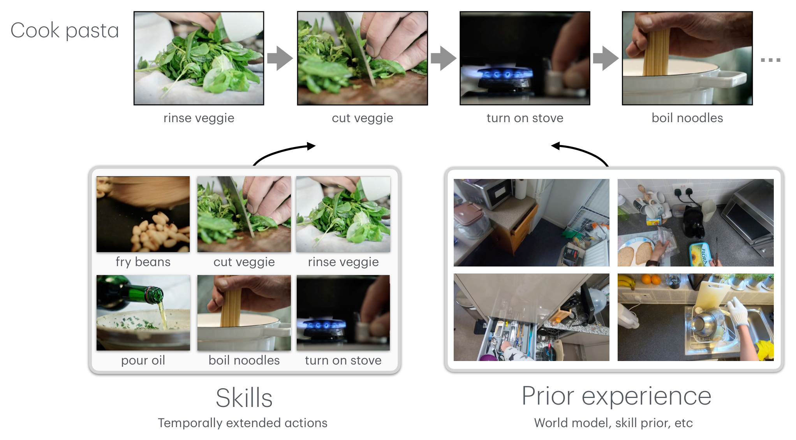
3. “스킬” 활용하기 (Leverage “Skills”)
첫 연구의 출처는 Lee et al., Composing Complex Skills by Learning Transition Policies, ICLR 2019입니다. 4–13쪽은 이 연구가 푸는 문제와 해법의 모양을 그림으로 먼저 보여 줍니다.
3.1 재사용 가능한 스킬로 조합 과제 풀기
4쪽의 제목은 “Leverage ‘skills’”(스킬을 활용하라)입니다.
- 왼쪽 상자 Reusable Skills(재사용 가능한 스킬)에는 스킬 정책 여섯 개가 있습니다 — 걷기 \(\pi_{\text{walk}}\), 뛰어넘기 \(\pi_{\text{jump}}\), 기어가기 \(\pi_{\text{crawl}}\), 앞으로 가기 \(\pi_{\text{forward}}\), 뒤로 가기 \(\pi_{\text{backward}}\), 균형 잡기 \(\pi_{\text{balance}}\).
- 오른쪽 Compositional Task(조합 과제)는 이 스킬들을 걷기 → 기어가기 → 걷기 → 뛰어넘기 → 걷기의 순서로 이어야 끝나는 장애물 과제입니다. 파란 판 밑은 기어서, 빨간 막대는 뛰어서 지나야 합니다.
메시지는 단순합니다. 긴 과제를 처음부터 하나의 평평한 정책으로 배우는 대신, 이미 배워 둔 스킬을 재사용해 이어 붙이면 됩니다. 16회차 2절의 셈대로, 스킬 단위로 결정하면 결정의 수와 탐색의 지수가 함께 줄어듭니다.
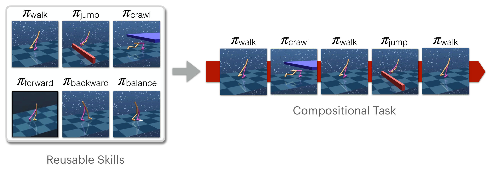
3.2 잡기–드리블–슛 (Catch-Dribble-Shoot)
5–7쪽은 농구 연습 영상으로 같은 생각을 사람의 경우에 비추어 봅니다. 영상 오른쪽 위의 상자에는 연습의 이름 Catch-Dribble-Shoot(잡기–드리블–슛)이 적혀 있습니다. 공을 받고, 드리블하고, 슛하는 세 동작을 잇는 연습입니다. 6쪽에서는 이 이름 가운데 “Dribble”만 빨간 글씨로 바뀌고 그 위에 빨간 X가 그어지는데, 슬라이드는 이 표시를 글로 설명하지 않습니다.
7쪽은 같은 영상을 흐리게 깔고 두 줄을 띄웁니다.
Learning a complex task efficiently: (1) learning skills in isolation (2) learning “transitions” between skills (복잡한 과제를 효율적으로 배우려면: (1) 스킬을 따로따로 배우고, (2) 스킬 사이의 “전환”을 배운다)
“skills in isolation”과 “transitions”만 진한 빨강으로 칠해 두 단계를 대비시킵니다. 사람도 잡기, 드리블, 슛을 각각 익힌 뒤 그 사이를 매끄럽게 잇는 연습을 따로 합니다. 이 연구의 해법이 바로 이 두 단계 — 따로 배운 스킬, 그리고 스킬 사이를 잇는 정책 — 입니다.
3.3 스킬은 서로 이어지는 법을 배운 적이 없다
그렇다면 스킬만 따로 잘 배워 두면 될까요? 8쪽의 답은 아니라는 것입니다.
Fail since these skills never learned to connect (이 스킬들은 서로 이어지는 법을 배운 적이 없어 실패한다)
- 슬라이드는 조합 과제의 띠에서 기어가기 \(\pi_{\text{crawl}}\)과 그 뒤의 걷기 \(\pi_{\text{walk}}\)를 점선 상자로 묶고, 아래에 파란 판 밑에서 다리를 구부린 채 바닥에 붙어 있는 로봇의 장면을 보여 줍니다.
- 각 스킬은 자기 과제를 배울 때 만난 초기 상태들에서만 연습했습니다. 걷기가 연습한 출발 자세에 기어가기가 끝난 웅크린 자세가 들어 있지 않았다면, 기어가기 다음에 곧바로 걷기를 실행할 때 걷기는 처음 보는 상태에서 출발하게 되고 실패합니다.
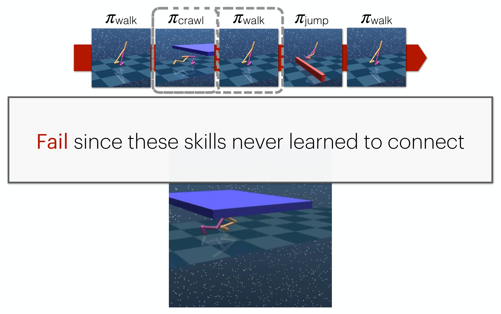
3.4 좋은 초기 상태와 개시 집합
9쪽은 실패의 원인을 상태 공간의 그림으로 옮깁니다.
- 뛰어넘기와 기어가기가 끝나는 상태들(점선의 끝)은 걷기에게 나쁜 초기 상태(bad initial states for \(\pi_{\text{walk}}\))입니다. 그런 상태에서 걷기를 시작하면 “\(\pi_{\text{walk}}\) fails”가 됩니다.
- 오른쪽 초록 상자는 걷기에게 좋은 초기 상태(good initial states for \(\pi_{\text{walk}}\))이며, 슬라이드는 이 집합을 “Initiation set”(개시 집합)이라 부릅니다.
스킬 정책 \(\pi\)의 개시 집합 \(I\)는, 그 상태에서 \(\pi\)를 시작했을 때 스킬이 성공하는 상태들의 집합입니다.
\[ I = \{\, \mathbf{s} : \mathbf{s}\text{에서 시작한 } \pi \text{가 성공한다} \,\} \]
16회차 7.1절의 옵션 \((I_\omega, \pi_\omega, \beta_\omega)\)에서 개시 집합은 “옵션을 실행할 수 있는 상태”였습니다. 여기서는 같은 이름이 “실행하면 성공하는 상태”라는 뜻으로 쓰입니다.
가운데 상자의 문장이 해법의 방향을 정합니다.
Need to bring an agent from an ending state of a previous policy to a good initial state of a next policy (앞 정책이 끝난 상태에서 다음 정책의 좋은 초기 상태로 에이전트를 데려가야 한다)
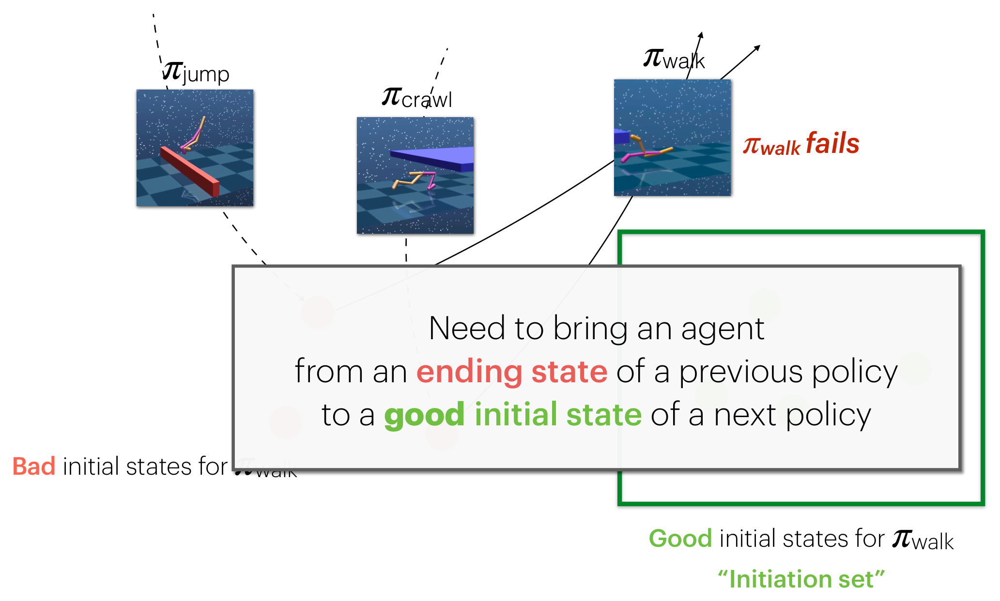
3.5 전환 정책
10쪽이 해법을 그립니다. 나쁜 초기 상태(빨간 점)에서 좋은 초기 상태(초록 점)로 에이전트를 옮기는 파란 점선이 전환 정책(transition policy)이고, 옮겨진 상태에서 시작한 걷기는 “\(\pi_{\text{walk}}\) succeeds”가 됩니다.
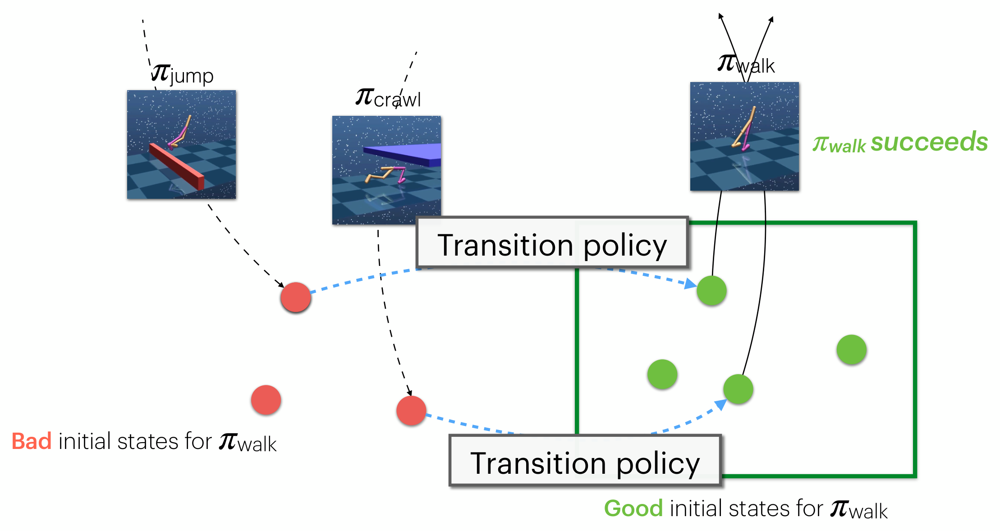
11–12쪽은 이 생각을 조합 과제 전체로 넓힙니다. 11쪽은 스킬 다섯 개가 맞붙은 띠를, 12쪽은 이웃한 두 스킬 사이마다 전환 정책 \(\pi_{\text{tr}}\)을 끼운 띠를 보여 줍니다.
- 스킬은 그대로 둡니다. 새로 배우는 것은 스킬 사이의 이음매뿐입니다.
- 띠에서는 네 전환 정책이 모두 \(\pi_{\text{tr}}\)로 적혀 있지만, 4절에서 보듯 전환 정책은 뒤에 오는 스킬마다 하나씩 있습니다. 전환 정책이 할 일이 “다음 스킬의 좋은 초기 상태로 데려가기”이므로, 무엇이 좋은 상태인지는 다음 스킬이 정하기 때문입니다.
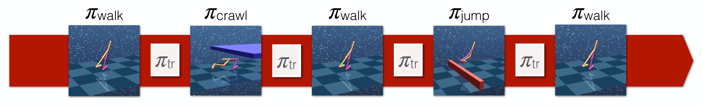
13쪽은 실제 영상입니다. 장애물 코스(obstacle course)에서 기어가기가 끝난 뒤 전환 정책이 자세를 고쳐 잡고, 이어서 걷기가 시작됩니다. 위쪽의 문장 “Smoothly connect skills”(스킬을 매끄럽게 잇는다)가 8쪽의 실패와 대비되는 결과입니다.
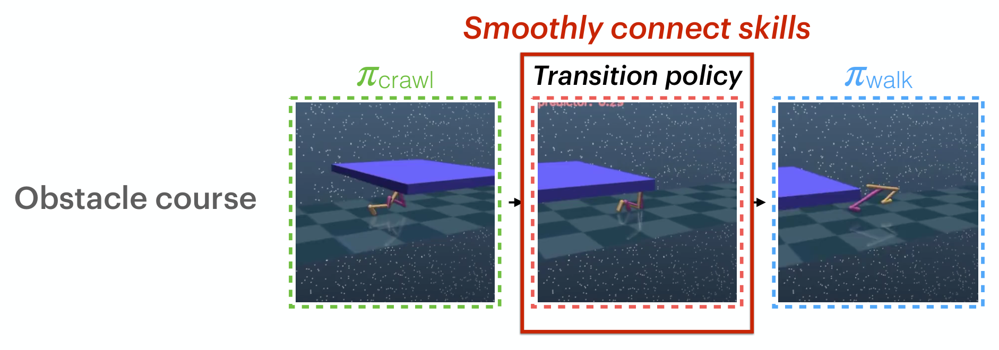
4. 모델 구조 (Model)
14–17쪽은 전환 정책을 끼운 전체 구조를 한 요소씩 쌓아 올립니다.
4.1 메타 정책과 스킬 라이브러리
14쪽에서 관측(observation)을 받은 메타 정책(meta policy)이 빨간 상자의 스킬 라이브러리(skill library) — Jumping, Walking, Crawling — 가운데 하나를 고릅니다. 그림에서는 Jumping이 선택되어 있습니다. 16회차 5.1절의 두 단계 정책으로 읽으면 메타 정책이 상위 정책, 라이브러리의 스킬이 하위 정책입니다. 원 논문은 실험에서 메타 정책을 학습하지 않고 규칙 기반(rule-based)으로 두고, 이웃한 스킬 사이의 전환에만 집중합니다.
4.2 스킬마다 붙는 전환 정책
15쪽은 라이브러리의 Jumping 상자를 확대해, 그 안에 Transition\(_{\text{jump}}\)(뛰어넘기 앞의 전환 정책)와 \(\pi_{\text{jump}}\)(뛰어넘기 스킬)가 짝으로 들어 있다는 것을 보여 줍니다. 전환 정책은 두 가지를 냅니다.
- 행동(action, 파란 막대): 매 스텝의 저수준 행동입니다.
- 종료(termination, 초록 막대): 전환을 여기서 끝낼지의 신호입니다. 원 논문에서는 정책 신경망의 마지막 층이 “끝낸다/계속한다”의 두 갈래 소프트맥스로 이 신호를 냅니다.
슬라이드는 “Repeat until reach a good initial state”(좋은 초기 상태에 닿을 때까지 반복)라고 적습니다. 16쪽에서는 전환이 끝나 \(\pi_{\text{jump}}\)가 행동과 종료 신호를 내고, 그 종료 신호가 참이 되면(“if Termination == True”) 제어가 메타 정책으로 돌아갑니다.
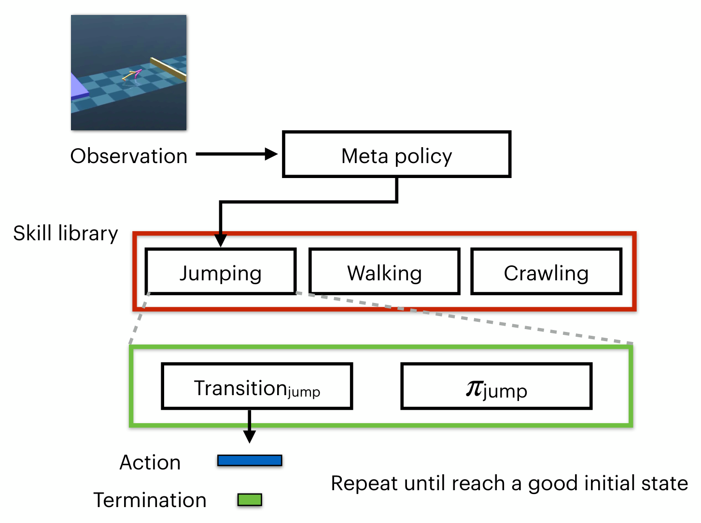
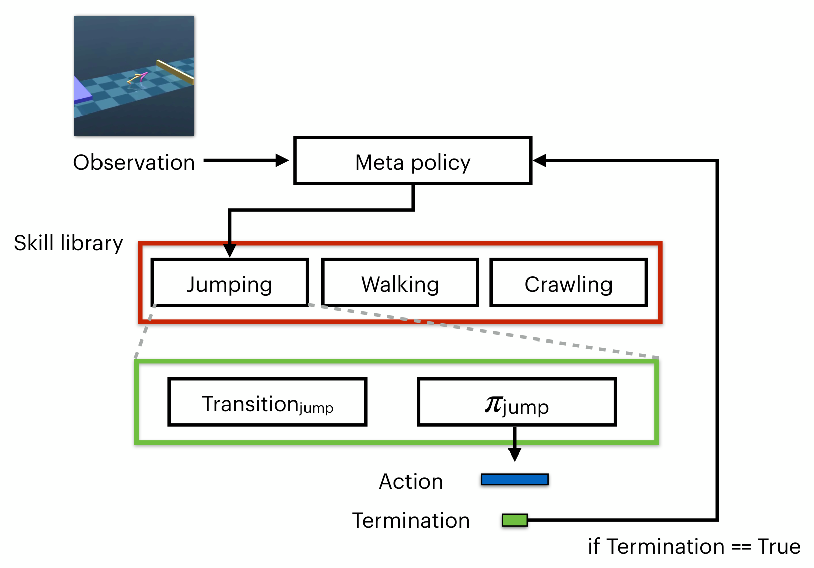
이 포스트에서는 스킬 \(c\) 앞의 전환 정책을 \(\pi^{\mathrm{tr}}_c\)로 적겠습니다(12쪽의 \(\pi_{\text{tr}}\), 15쪽의 Transition\(_{\text{jump}}\)).
- 메타 정책이 관측을 보고 스킬 라이브러리에서 스킬 \(c\)를 고릅니다.
- 전환 정책 \(\pi^{\mathrm{tr}}_c\)가 매 스텝 행동 \(\mathbf{a}_t\)와 종료 신호 \(\tau_t\)를 냅니다. \(\tau_t\)가 “종료”가 될 때까지 반복합니다.
- 스킬 정책 \(\pi_c\)가 매 스텝 행동과 종료 신호를 냅니다. 종료 신호가 참이 되면 1로 돌아갑니다.
4.3 전환 정책의 보상은 무엇인가
17쪽은 구조도를 흐리게 덮고 질문 하나를 던집니다.
What is reward for learning a transition policy? — Success of the following skill (전환 정책을 학습할 보상은 무엇인가? — 뒤따르는 스킬의 성공)
전환 정책에게는 따로 정해진 과제 보상이 없습니다. 전환 정책이 잘했는지는 그 뒤에 실행된 스킬이 성공했는가로만 판단할 수 있습니다. 5–7절은 이 판정을 학습에 쓸 수 있는 보상으로 바꾸는 과정입니다.
5. 전환 정책 학습 (Learning Transition Policy)
18쪽은 걷기 앞의 전환 정책을 예로, 상태 공간을 두 상자로 나눕니다. 왼쪽은 걷기에 나쁜 초기 상태, 오른쪽은 좋은 초기 상태이고, 파란 점선은 전환 정책이 실제로 지나간 궤적입니다.
- 두 궤적은 초록 상자 안에서 끝나고, 그 자리에서 시작한 걷기가 성공합니다(succeed).
- 한 궤적은 빨간 상자를 벗어나지 못하고 끝나며, 걷기가 실패합니다(fail).
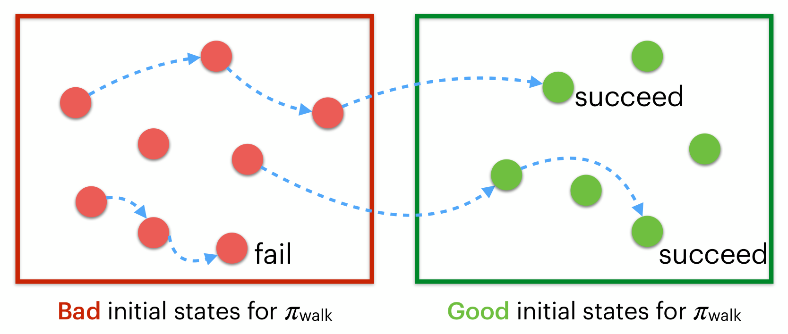
19–21쪽은 이 판정을 그대로 보상으로 적습니다.
- 뒤따르는 스킬의 실행이 성공하면 +1(Successful execution of the following skill: +1)
- 실패하면 0(Failing execution of the following skill: 0)
전환 궤적 \(\mathbf{s}_0, \mathbf{s}_1, \dots, \mathbf{s}_T\)(\(T\)는 전환 정책이 종료한 시각)로 적으면, 중간 스텝의 보상은 모두 0이고 마지막에만 다음과 같은 값이 붙습니다.
\[ r_T = \begin{cases} 1, & \mathbf{s}_T\text{에서 시작한 다음 스킬이 성공} \\ 0, & \text{실패} \end{cases} \]
21쪽은 이 보상의 문제를 한 줄로 짚습니다.
Reward is binary and sparse! (보상이 이진적이고 희소하다!)
- 이진적(binary): 목표 바로 앞에서 멈춘 궤적과 엉뚱한 곳에서 헤매다 멈춘 궤적이 똑같이 0을 받습니다. 어느 쪽이 더 나은지에 대한 정보가 없습니다.
- 희소함(sparse): 보상은 궤적의 맨 끝, 그것도 다음 스킬까지 실행해 본 뒤에야 주어집니다. 무작위로 움직이는 초기의 전환 정책이 우연히 개시 집합 안에서 멈출 확률은 낮으므로, 성공 신호를 거의 받지 못한 채 학습이 시작됩니다.
6. 근접도 보상 (Proximity Reward)
22–25쪽은 이진 보상을 촘촘한 보상으로 바꿉니다.
6.1 이진 보상 대신 근접도 예측
22쪽은 18쪽의 그림에서 궤적이 지나간 상태마다 이진 보상의 값을 적어, 무엇이 문제인지를 숫자로 보여 줍니다. 1은 성공한 두 궤적의 끝점에만 있고, 나머지는 모두 0입니다. 둘째 궤적은 좋은 초기 상태(초록 점)를 한 번 지나가고도 거기서 멈추지 않았으므로 그 자리의 값이 0입니다.
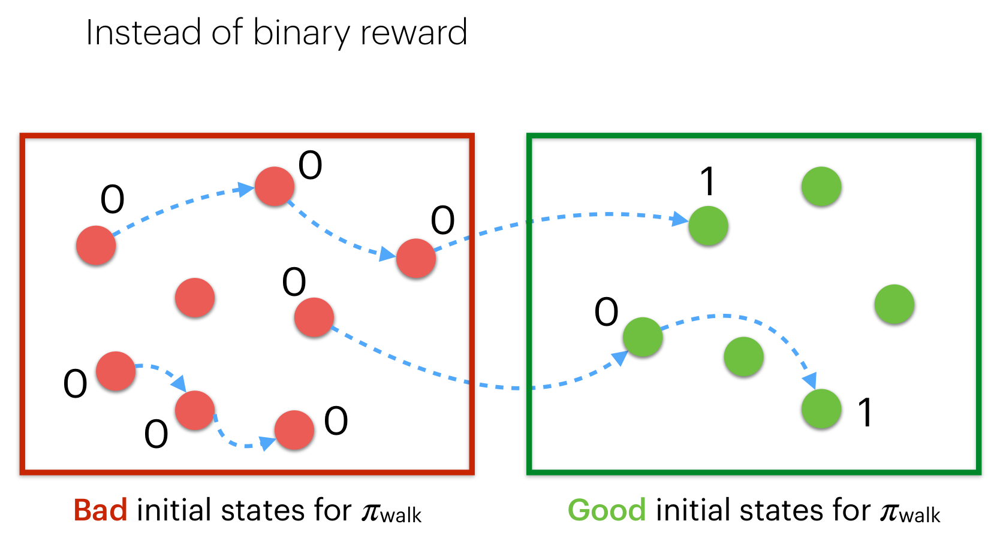
23쪽이 대안을 내놓습니다.
Instead of binary reward, use “proximity prediction”, which estimates how close to good initial states (이진 보상 대신, 좋은 초기 상태에 얼마나 가까운지를 추정하는 “근접도 예측”을 쓴다)
이제 그림의 모든 상태에 0과 1 사이의 값이 붙습니다. 초록 상자 안은 1 또는 1에 가깝고(1, 0.9, 0.8), 초록 상자에 가까워지는 첫째 궤적은 0.7 → 0.8 → 0.9로 커지며, 실패한 셋째 궤적은 0.1 → 0.2 → 0.3으로 작은 값에 머뭅니다. 이 값들은 슬라이드의 말대로 근접도를 추정한 예측값이며, 이진 보상과 달리 “거의 다 왔다”와 “한참 멀었다”를 구별해 줍니다.
6.2 근접도의 정의
24쪽이 근접도를 정의합니다.
\[ P(\mathbf{s}) = \delta^{\,\text{step}}, \qquad \delta \in (0, 1) \]
슬라이드는 step이 무엇인지 따로 적지 않습니다. 원 논문에 따르면 step은 그 상태에서 다음 스킬의 개시 집합에 닿기까지 필요한 스텝 수입니다.
- 개시 집합 안의 상태는 step \(= 0\)이므로 \(P = 1\)입니다.
- 한 스텝 떨어질 때마다 \(\delta\)배씩 줄어듭니다. 할인율 \(\gamma\)가 미래의 보상을 깎듯, \(\delta\)는 먼 상태의 근접도를 깎습니다.
- 다음 스킬이 실패한 궤적의 상태는 개시 집합에 닿지 못한 것이므로 근접도 0으로 취급합니다(7절의 손실).
예를 들어 \(\delta = 0.9\)라면 개시 집합에서 0, 1, 2, 3스텝 떨어진 상태의 근접도는 \(1, 0.9, 0.81, 0.729\)이고, 소수 첫째 자리에서 반올림하면 23쪽 첫째 궤적의 값 1, 0.9, 0.8, 0.7과 같습니다.
6.3 매 스텝의 근접도 보상
25쪽은 근접도로 보상을 만듭니다.
and provide proximity reward every step: \(P(\mathbf{s}_{t+1}) - P(\mathbf{s}_t)\)
\[ r_t = P(\mathbf{s}_{t+1}) - P(\mathbf{s}_t) \]
한 스텝 동안 다음 스킬의 개시 집합에 가까워진 만큼이 그 스텝의 보상입니다. 가까워지면 양수, 멀어지면 음수이므로 매 스텝 방향을 알려 주는 촘촘한 신호가 됩니다.
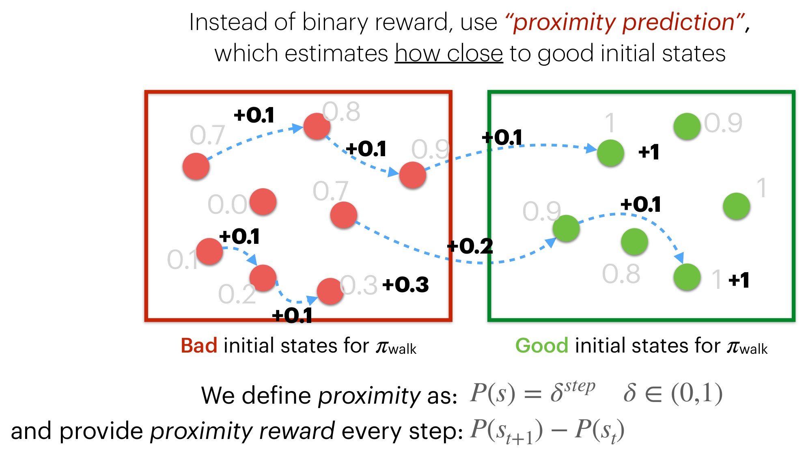
그림에서 끝점 옆에 하나 더 붙은 \(+1\)과 \(+0.3\)은 무엇일까요? 원 논문의 목적함수에 그 답이 있습니다. 전환 정책 \(\pi^{\mathrm{tr}}\)은 매 스텝의 근접도 보상에 더해 마지막 상태의 근접도 \(P_\omega(\mathbf{s}_T)\)를 한 번 더 받도록 학습됩니다. 여기서 \(P_\omega\)는 7절에서 배울, 매개변수 \(\omega\)의 근접도 예측기입니다.
\[ R_{\text{trans}} = \mathbb{E}\Big[\, \gamma^{T} P_\omega(\mathbf{s}_T) + \sum_{t=0}^{T-1} \gamma^{t} \big( P_\omega(\mathbf{s}_{t+1}) - P_\omega(\mathbf{s}_t) \big) \Big] \]
할인이 없다고 두면(\(\gamma = 1\)) 둘째 항의 합에서 중간 항이 모두 상쇄됩니다.
\[ \sum_{t=0}^{T-1} \big( P(\mathbf{s}_{t+1}) - P(\mathbf{s}_t) \big) = P(\mathbf{s}_T) - P(\mathbf{s}_0) \]
따라서 한 전환 궤적의 반환값은 \(2P(\mathbf{s}_T) - P(\mathbf{s}_0)\)가 됩니다. 시작 상태 \(\mathbf{s}_0\)은 앞 스킬이 끝난 자리로 이미 정해져 있으므로, 전환 정책이 할 일은 결국 개시 집합에 최대한 가까운 곳에서 멈추는 것입니다. 25쪽의 숫자로 확인하면 다음과 같습니다.
| 궤적 | 근접도의 변화 | 스텝별 보상의 합 | 끝의 보상 | 반환값 \(2P(\mathbf{s}_T) - P(\mathbf{s}_0)\) |
|---|---|---|---|---|
| 첫째 (성공) | 0.7 → 0.8 → 0.9 → 1 | 0.1 + 0.1 + 0.1 = 0.3 | +1 | 1.3 |
| 둘째 (성공) | 0.7 → 0.9 → 1 | 0.2 + 0.1 = 0.3 | +1 | 1.3 |
| 셋째 (실패) | 0.1 → 0.2 → 0.3 | 0.1 + 0.1 = 0.2 | +0.3 | 0.5 |
- 경로가 달라도(셋 대 둘의 스텝) 시작과 끝의 근접도가 같은 두 성공 궤적은 같은 반환값을 받습니다.
- 실패한 궤적도 0이 아니라 “0.1에서 0.3까지는 다가갔다”는 만큼의 신호를 받습니다. 이진 보상에서는 사라졌던 정보입니다.
13회차 3.2절의 LunarLander 보상은 형성 항의 “이번 값 − 지난 값”을 매 스텝 주었고, 그 합이 마지막 상태와 첫 상태의 점수 차이로 상쇄된다는 것을 보았습니다. 근접도 보상은 그 점수 자리에 근접도 \(P\)를 넣은 것입니다. 그래서 같은 성질을 가집니다.
- 촘촘합니다: 매 스텝 “개시 집합에 가까워졌는가”를 알려 줍니다.
- 부풀릴 수 없습니다: 할인이 없을 때 합이 \(P(\mathbf{s}_T) - P(\mathbf{s}_0)\)으로 상쇄되므로, 같은 곳을 오가며 보상을 거듭 챙길 수 없습니다.
13회차의 형성 항은 사람이 거리·속력·각도로 손수 설계했지만, 근접도는 다음 스킬의 성공·실패 데이터에서 배운다는 점이 다릅니다. 그 학습이 7절의 내용입니다.
7. 근접도 예측기 학습 (Learning Proximity Predictor)
근접도의 정의에는 “개시 집합까지 몇 스텝인가”가 들어 있지만, 개시 집합은 미리 알려져 있지 않습니다. 26–31쪽은 근접도를 데이터에서 배우는 과정을 보여 줍니다.
26쪽 위쪽의 띠는 장애물 코스의 한 에피소드입니다 — Transition\(_{\text{jump}}\) → \(\pi_{\text{jump}}\) → Transition\(_{\text{walk}}\) → \(\pi_{\text{walk}}\) → Transition\(_{\text{crawl}}\) → \(\pi_{\text{crawl}}\). 뛰어넘기(노란 꼬리표 “Jumping”)를 예로 과정은 다음과 같습니다.
- 판정: Transition\(_{\text{jump}}\)가 지나간 상태들을 모아 두고, 이어서 실행된 \(\pi_{\text{jump}}\)가 성공했는지 실패했는지(“success or failure?”)를 봅니다.
- 버퍼에 담기: 성공했으면 상태들을 근접도 라벨과 함께 \((\mathbf{s}, P(\mathbf{s}))\)의 꼴로 성공 버퍼(success buffer)에, 실패했으면 상태 \(\mathbf{s}\)만 실패 버퍼(failure buffer)에 넣습니다(26쪽).
- 예측기 학습: 두 버퍼로 근접도 예측기(proximity predictor)를 학습해, 임의의 상태의 근접도 \(P(\mathbf{s})\)를 내게 합니다(27쪽).
- 보상: 예측기의 출력으로 근접도 보상 \(P(\mathbf{s}_{t+1}) - P(\mathbf{s}_t)\)를 만들어 Transition\(_{\text{jump}}\)에 줍니다(28쪽).
- 반복: 보상으로 개선된 Transition\(_{\text{jump}}\)가 다시 궤적을 모으고, 1로 돌아갑니다(29쪽의 되돌아가는 화살표).
30쪽과 31쪽은 같은 그림을 Walking(Transition\(_{\text{walk}}\))과 Crawling(Transition\(_{\text{crawl}}\))에 대해 되풀이합니다. 스킬마다 버퍼, 근접도 예측기, 전환 정책이 따로 있습니다.
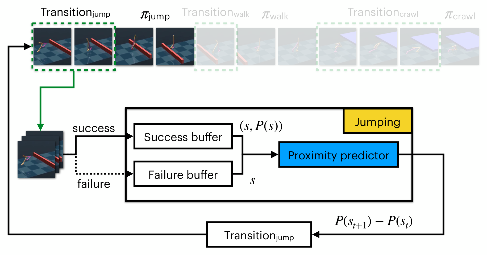
성공 버퍼 \(\mathcal{B}^{S}\)에는 상태와 근접도 라벨의 쌍 \((\mathbf{s}, v)\)가, 실패 버퍼 \(\mathcal{B}^{F}\)에는 상태 \(\mathbf{s}\)만 들어 있습니다. 근접도 예측기 \(P_\omega\)는 평균제곱오차를 최소화하도록 학습됩니다.
\[ \mathcal{L}_P(\omega) = \frac{1}{2}\, \mathbb{E}_{(\mathbf{s}, v) \sim \mathcal{B}^{S}} \big[ (P_\omega(\mathbf{s}) - v)^2 \big] + \frac{1}{2}\, \mathbb{E}_{\mathbf{s} \sim \mathcal{B}^{F}} \big[ P_\omega(\mathbf{s})^2 \big] \]
- 첫째 항: 성공한 전환 궤적 \(\mathbf{s}_0, \dots, \mathbf{s}_T\)에서는 \(\mathbf{s}_T\)가 다음 스킬이 성공한 자리, 곧 개시 집합 안의 상태이므로, \(\mathbf{s}_t\)의 라벨은 \(v = \delta^{\,T - t}\)입니다. 예측기는 이 값을 맞히도록 회귀합니다.
- 둘째 항: 실패한 궤적의 상태는 라벨 0을 맞히도록, 곧 근접도를 낮추도록 학습합니다.
원 논문은 이 보상으로 전환 정책을 PPO(5회차)로 학습합니다.
13회차 8절의 GAIL에서도 분류기와 정책이 함께 학습되었지만, 둘의 관계는 다릅니다. GAIL의 판별기는 정책의 상태–행동을 시연과 가려내려는 적대적 상대였습니다. 근접도 예측기는 다음 스킬의 성공·실패라는 결과에 회귀할 뿐이어서, 전환 정책이 좋아질수록 성공 버퍼가 채워지고 예측도 정확해지는 협력 관계입니다. 13절의 T-STAR는 이와 달리 적대적인 판별기를 씁니다.
8. 순찰 (Patrol)
32–34쪽은 걷기 로봇의 다른 과제 순찰(patrol)입니다. 앞으로 걷기(Walk Forward), 전환(Transition), 뒤로 걷기(Walk Backward)의 세 단계가 차례로 강조되며 영상이 진행합니다. 앞으로 걷던 몸이 뒤로 걷기 시작하려면 그 사이에 자세를 바꾸는 구간이 필요한데, 그 구간을 전환 정책이 맡습니다.
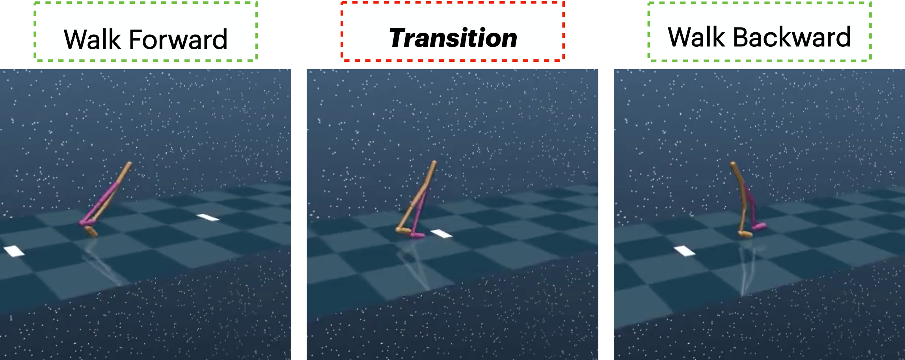
9. 서브: 토스와 타격 (Serve (Toss & Hit))
35–37쪽은 로봇 팔의 과제 서브(serve)입니다. 공을 던져 올리고(Toss), 전환하고(Transition), 공을 칩니다(Hit). 원 논문에 따르면 조작 과제에는 Kinova Jaco 로봇 팔을 썼습니다. 던지기가 끝난 팔의 자세가 치기에 알맞은 자세라는 보장은 없으므로, 공이 떠 있는 동안 치기 좋은 자세로 옮겨 가는 것이 전환 정책의 몫입니다. 걷기 과제와 달리 공이 떨어지기 전에 끝내야 하므로, 전환 정책이 언제 끝낼지(4.2절의 종료 신호)도 중요해집니다.
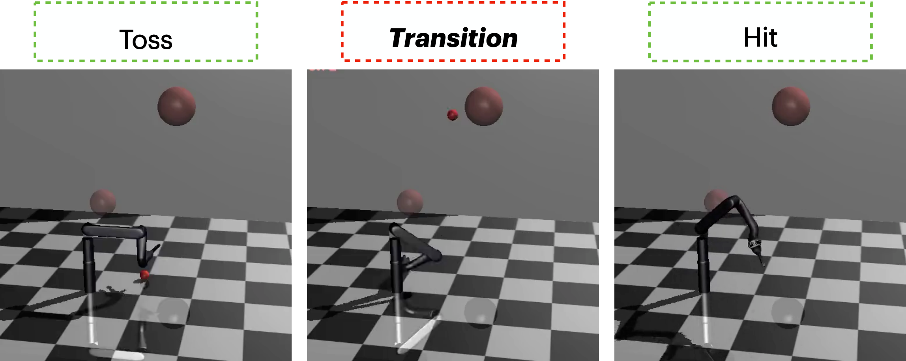
10. 요약 — 전환 정책 (Summary — Transition Policy)
38쪽이 첫 연구를 네 줄로 정리합니다.
- 스킬을 재사용해 복잡하고 긴 지평의 과제를 조합하자고 제안합니다 (We propose to reuse skills to compose complex, long-horizon tasks).
- 스킬을 그냥 이어 실행하면 실패합니다. 스킬들이 서로 이어지는 법을 배운 적이 없기 때문입니다 (Naive execution of skills fails since the skills never learned to connect).
- 전환 정책이 스킬을 매끄럽게 잇는 법을 배웁니다 (Transition policies learn to smoothly connect skills).
- 근접도 예측기가 전환 정책을 효율적으로 학습시킬 촘촘한 보상을 줍니다 (Proximity predictors provide dense reward for efficient training of transition policies).
- 스킬: 상위 결정은 목표 상태가 아니라 라이브러리의 스킬 하나입니다. 원 논문의 메타 정책은 규칙 기반입니다.
- 사전학습: 스킬은 미리 학습된 것을 그대로 쓰고, 전환 정책과 근접도 예측기만 새로 배웁니다. 스킬이 바뀌지 않으므로, 전환 정책이 학습하는 동안 “다음 스킬이 이 상태에서 성공하는가”라는 판정의 기준은 고정되어 있습니다.
- 스스로 종료: 전환 정책과 스킬이 각자 종료 신호를 내므로 구간의 길이가 상태에 따라 달라집니다.
- 온폴리시: 원 논문은 전환 정책을 PPO로 학습합니다.
11. 가구 조립을 해 보자! (Let’s Try Furniture Assembly!)
두 번째 연구의 출처는 Lee et al., Adversarial Skill Chaining for Long-Horizon Robot Manipulation via Terminal State Regularization, CoRL 2021입니다.
11.1 스킬로 가구 조립을 풀 수 있을까
39쪽의 질문으로 무대가 바뀝니다.
Then, can we solve furniture assembly with skills? (그렇다면, 스킬로 가구 조립을 풀 수 있을까?)
40쪽은 1–10절의 방법을 그대로 옮겨 봅니다. 탁자 다리를 하나씩 끼우는 스킬 \(\pi_1, \pi_2, \pi_3, \pi_4\) 사이에 전환 정책 Transition\(_2\), Transition\(_3\), Transition\(_4\)를 넣는 것입니다. 전환 정책의 아래 첨자가 뒤에 오는 스킬의 번호를 따르는 것은, 3.5절에서 보았듯 전환 정책이 다음 스킬의 좋은 초기 상태로 데려다주는 정책이기 때문입니다.
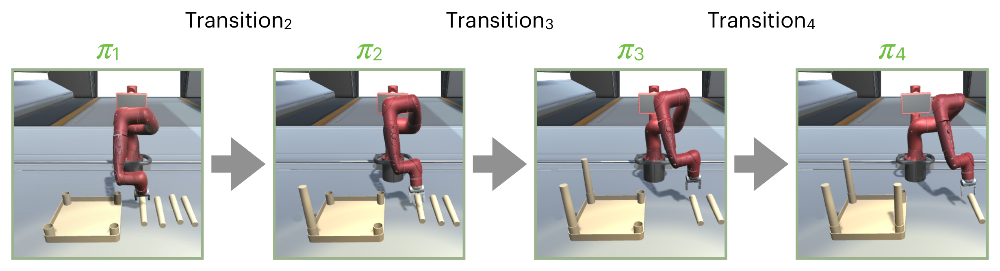
11.2 개시 집합과 종료 집합
41쪽은 세 전환 정책의 이름에 빨간 X를 긋습니다. 왜 안 되는지를 보이려고 42쪽은 스킬 하나를 두 집합의 짝으로 요약합니다.
- 개시 집합(initiation set) \(I_i\): \(\pi_i\)가 성공하는 모든 초기 상태 (all successful initial states of \(\pi_i\))
- 종료 집합(termination set) \(\beta_i\): \(\pi_i\)가 성공했을 때의 마지막 상태들 (successful terminal states of \(\pi_i\))
원 논문의 표현으로는 “개시 집합은 정책을 성공적으로 실행하게 하는 모든 초기 상태를, 종료 집합은 성공한 실행의 모든 마지막 상태를 담는다”입니다.
16회차 7.1절의 옵션에서 \(\beta_\omega\)는 상태마다 옵션이 끝날 확률을 주는 종료 함수였습니다. 이 데크의 \(\beta_i\)는 스킬 \(\pi_i\)가 성공적으로 끝난 상태들의 집합입니다. 이름(termination)과 글자(β)가 같아도 뜻이 다르므로, 11–14절에서는 \(\beta_i\)를 늘 “종료 집합”으로 읽어야 합니다.
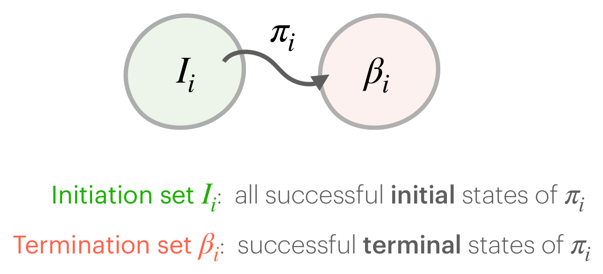
43쪽은 두 스킬을 이어 붙입니다. 앞 스킬의 종료 집합 \(\beta_{i-1}\)과 다음 스킬의 개시 집합 \(I_i\)가 일부만 겹치면, 겹치지 않는 부분(빨간 초승달)에서 끝난 경우에는 다음 스킬이 실패합니다(“\(\pi_i\) fails”). 스킬을 문제없이 이으려면 앞 스킬이 끝나는 곳이 모두 다음 스킬이 성공하는 곳 안에 있어야 합니다.
\[ \beta_{i-1} \subseteq I_i \quad \text{(이을 수 있는 조건)}, \qquad \beta_{i-1} \setminus I_i \quad \text{(다음 스킬이 실패하는 영역)} \]
3.4절에서 앞 스킬이 끝난 “나쁜 초기 상태”가 바로 \(\beta_{i-1} \setminus I_i\)에 해당하고, 전환 정책은 그 영역의 상태를 \(I_i\) 안으로 옮기는 정책이었습니다.
11.3 좋은 초기 상태로 옮기는 일은 쉽지 않다
44쪽은 조립 장면으로 그 영역을 보여 줍니다. 앞 스킬이 다리를 끼우는 데는 성공했지만 남은 다리 하나가 상판 바로 옆에 비스듬히 놓인 상태는, 다음 스킬이 다리를 집어 들기 좋은 상태 — 남은 다리들이 오른쪽에 나란히 놓인 상태 — 와 다릅니다. 둘 사이를 잇는 것이 전환 정책의 일일 텐데, 슬라이드는 물음표를 붙입니다(“Transition policy?”).
Moving to a good initial state is not trivial and sometimes not possible! (좋은 초기 상태로 옮겨 가는 일은 간단하지 않고, 때로는 불가능하다!)
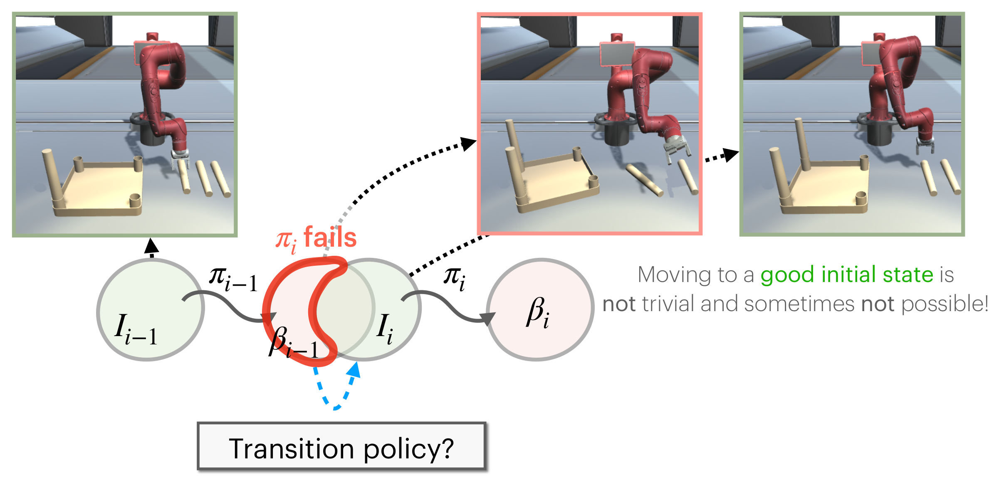
45쪽이 결론을 내립니다.
Transition policy cannot work with irreversible or uncontrollable states (e.g. object inside gripper, attached objects) (전환 정책은 되돌릴 수 없거나 제어할 수 없는 상태에서는 작동하지 않는다 — 예: 그리퍼 안에 쥔 물체, 붙여 버린 부품)
- 되돌릴 수 없는 상태(irreversible): 이미 끼운 다리는 전환 정책이 빼낼 수 없습니다. 끼운 모양이 다음 스킬에 맞지 않더라도 전환 정책이 그것을 바로잡기는 어렵습니다.
- 제어할 수 없는 상태(uncontrollable): 그리퍼 안에서 물체가 어떤 자세로 쥐어졌는지는 팔을 움직이는 것만으로는 바꾸기 어렵습니다.
걷기 로봇은 어떤 자세에서든 대개 다시 일어설 수 있었기에 “좋은 초기 상태로 옮기기”가 가능했습니다. 조립에서는 그 전제가 무너집니다. 그렇다면 남은 길은 스킬 사이에 무엇을 끼우는 대신 스킬 자체를 고치는 것입니다.
12. 스킬 잇기 (Chaining Skills)
46–50쪽은 스킬 자체를 고쳐 잇는 앞선 방법(Clegg et al., Learning to Dress: Synthesizing Human Dressing Motion via Deep Reinforcement Learning, SIGGRAPH Asia 2018)과 그 한계를 봅니다.
12.1 개시 집합 넓히기
46쪽의 아이디어는 다음 스킬 \(\pi_i\)를 미세 조정해 개시 집합 \(I_i\)를 넓히는 것(Increase \(I_i\))입니다. \(I_i\)가 앞 스킬의 종료 집합 \(\beta_{i-1}\)을 통째로 덮으면 11.2절의 조건 \(\beta_{i-1} \subseteq I_i\)가 성립하고, 전환 정책 없이도 스킬이 이어집니다. 원 논문(T-STAR)의 표현으로, 이 방법은 “각 하위 과제의 정책을 먼저 따로 학습한 뒤, 앞 정책의 마지막 상태들을 덮도록 정책들을 미세 조정”합니다.
47–48쪽은 그 대가를 보여 줍니다. \(I_i\)가 커지자 \(\beta_i\)도 커집니다(\(\beta_i\) also increases).
- \(\pi_i\)는 이제 더 다양한 상태에서 출발해도 성공해야 합니다.
- 출발점이 흩어져 있으면 성공하더라도 끝나는 자리 역시 흩어지기 쉽습니다. 그 결과 \(\pi_i\)의 종료 집합이 원래보다 넓게 퍼집니다.
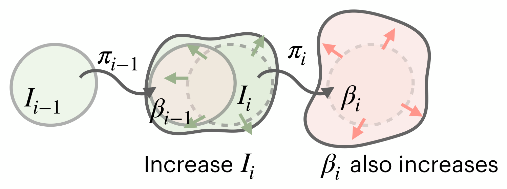
12.2 더 많은 스킬 잇기 (Chaining More Skills…)
49쪽은 스킬을 하나 더 잇습니다. 커진 \(\beta_i\)를 덮으려면 \(I_{i+1}\)이 더 커져야 하고, 그러면 \(\beta_{i+1}\)이 또 커집니다. 50쪽 바탕에 흐리게 남은 글처럼 \(I_{i+1}, \beta_{i+1}, \dots\)가 점점 커집니다(get larger and larger). 스킬을 길게 이을수록 뒤의 스킬이 감당해야 할 시작 상태가 점점 더 넓어지므로, 긴 조립 과제에서는 이것이 감당하기 어려워집니다.
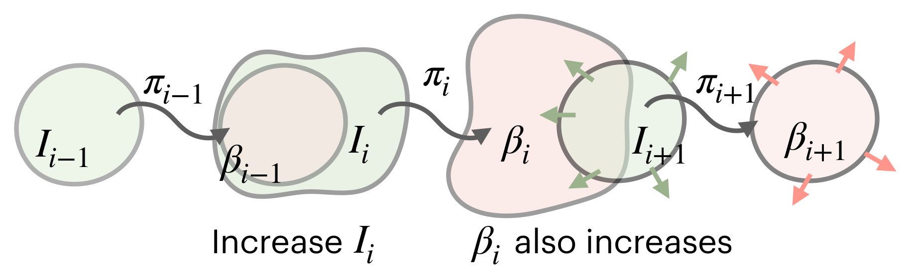
50쪽은 그 위에 해법의 조건을 띄웁니다.
To chain more skills: (1) increase initiation set, while (2) keep termination set small (더 많은 스킬을 이으려면: (1) 개시 집합은 넓히면서, (2) 종료 집합은 작게 유지한다)
Clegg et al.의 방법은 (1)만 했습니다. 두 번째 연구 T-STAR는 (2)를 더합니다.
13. 종료 상태 정규화 (Terminal STAte Regularization, T-STAR)
13.1 개시 집합은 넓히고 종료 상태는 묶는다
51쪽 왼쪽은 12.2절의 두 조건을 한 그림에 담습니다. \(\pi_i\)를 미세 조정해 \(I_i\)는 넓히면서(Fine-tune \(\pi_i\) to cover larger \(I_i\), 바깥을 향한 초록 화살표), 동시에 \(\beta_i\)는 안쪽으로 오므려 다음 스킬의 개시 집합 \(I_{i+1}\) 안에 들어가게 합니다(안쪽을 향한 빨간 화살표). 오른쪽은 이를 상태 공간에서 다시 그립니다. \(\pi_i\)의 종료 상태(terminal states for \(\pi_i\), 빨간 상자의 빨간 점)를 다음 스킬의 좋은 초기 상태(good initial states for \(\pi_{i+1}\), 초록 상자의 초록 점) 쪽으로 밀어 넣는 것(빨간 점선 화살표)이 목표입니다.
13.2 종료 상태 정규화 보상
52쪽이 그 방법을 보상으로 적습니다.
Reward \(\pi_i\) if a terminal state is close to \(I_{i+1}\) (\(\pi_i\)의 마지막 상태가 \(I_{i+1}\)에 가까우면 \(\pi_i\)에게 보상한다)
\[ R^{i}_{\mathrm{TSR}}(\mathbf{s}) = \mathbf{1}_{\mathbf{s} \in \beta_i}\, D^{i+1}(\mathbf{s}) \]
- \(\mathbf{1}_{\mathbf{s} \in \beta_i}\)는 지시함수로, \(\mathbf{s}\)가 \(\pi_i\)가 성공적으로 끝난 마지막 상태일 때만 1입니다. 따라서 이 보상은 실행 도중이 아니라 스킬이 끝나는 순간에 한 번 주어집니다.
- \(D^{i+1}(\mathbf{s})\)는 개시 집합 판별기(initiation set discriminator)의 출력으로, \(\mathbf{s}\)가 다음 스킬의 개시 집합 \(I_{i+1}\)에 속할 법한 정도입니다. 그림의 초록 덩어리가 판별기가 그리는 “좋은 초기 상태”의 근사이며(Good initial states for \(\pi_{i+1} \approx D^{i+1}(s)\)), 그 밖에서 끝난 상태는 0, 안에서 끝난 상태는 +1을 받습니다.
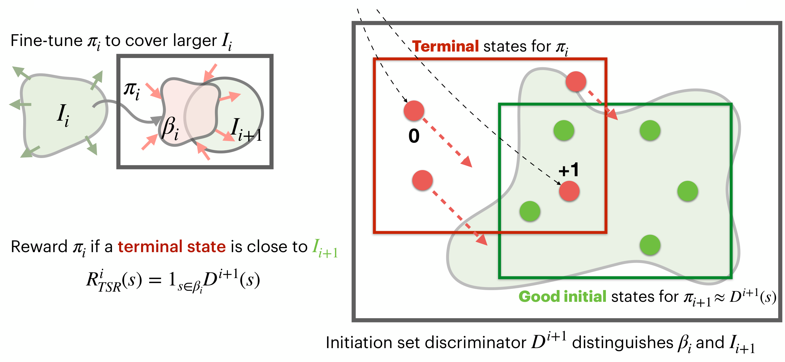
원 논문에서 각 스킬은 먼저 시연을 이용한 GAIL(13회차 8절)과 PPO(5회차)로 하위 과제를 배운 뒤, 이 보상을 더해 미세 조정됩니다. 미세 조정 때의 보상은 환경 보상, GAIL 보상, 종료 상태 정규화 보상의 가중합입니다.
\[ R^{i}(\mathbf{s}_t, \mathbf{a}_t, \mathbf{s}_{t+1}) = \lambda_1 R^{i}_{\mathrm{ENV}}(\mathbf{s}_t, \mathbf{a}_t, \mathbf{s}_{t+1}) + \lambda_2 R^{i}_{\mathrm{GAIL}}(\mathbf{s}_t, \mathbf{a}_t) + \lambda_3 R^{i}_{\mathrm{TSR}}(\mathbf{s}_{t+1}) \]
미세 조정의 초기 상태는 환경의 초기 상태뿐 아니라 앞 스킬의 종료 상태에서도 뽑습니다. 이것이 \(I_i\)를 넓히는 쪽(51쪽의 초록 화살표)이고, \(R^{i}_{\mathrm{TSR}}\)이 \(\beta_i\)를 묶는 쪽(빨간 화살표)입니다. 모든 하위 과제의 스킬을 이렇게 함께 미세 조정해, 한 스킬의 마지막 상태가 다음 스킬의 좋은 초기 상태가 되게 합니다.
13.3 개시 집합 판별기
판별기 \(D^{i+1}\)은 다음 스킬 \(\pi_{i+1}\)의 개시 집합에 속한 상태에는 1을, 앞 스킬 \(\pi_i\)의 종료 상태에는 0을 내도록 학습됩니다. 원 논문의 손실을 슬라이드의 첨자에 맞추어 적으면 다음과 같습니다.
\[ \mathcal{L}(\omega) = \mathbb{E}_{\mathbf{s} \sim I_{i+1}} \big[ (D^{i+1}_\omega(\mathbf{s}) - 1)^2 \big] + \mathbb{E}_{\mathbf{s} \sim \beta_i} \big[ D^{i+1}_\omega(\mathbf{s})^2 \big] \]
판별기는 \(\beta_i\)와 \(I_{i+1}\)을 가려내려 하고, \(\pi_i\)는 자기 마지막 상태가 \(I_{i+1}\)처럼 보이도록, 곧 판별기가 가려내지 못하도록 바뀝니다. 13회차 8절의 GAIL에서 판별기와 정책이 겨루던 구도를 “시연 대 정책”에서 “다음 스킬의 시작 대 이 스킬의 끝”으로 옮긴 것이며, 논문 제목의 “적대적 스킬 잇기(adversarial skill chaining)”가 이 구도를 가리킵니다. 겨룸이 끝나는 지점은 판별기가 둘을 가려낼 수 없을 때, 곧 \(\pi_i\)의 마지막 상태들이 \(I_{i+1}\) 안에 들어왔을 때입니다.
| 전환 정책 (2019) | T-STAR (2021) | |
|---|---|---|
| 새로 배우는 것 | 스킬 사이의 전환 정책 (스킬은 그대로) | 스킬 자체 (미세 조정) |
| 보상을 주는 학습기 | 근접도 예측기 \(P_\omega\) | 개시 집합 판별기 \(D^{i+1}_\omega\) |
| 학습기의 라벨 | 다음 스킬이 성공한 궤적은 \(\delta^{\,T-t}\), 실패한 궤적은 0 (회귀) | 다음 스킬의 개시 집합은 1, 이 스킬의 종료 상태는 0 (적대적 구분) |
| 보상을 주는 때 | 매 스텝 \(P(\mathbf{s}_{t+1}) - P(\mathbf{s}_t)\), 끝에서 \(P(\mathbf{s}_T)\) | 스킬이 끝나는 순간 \(\mathbf{1}_{\mathbf{s} \in \beta_i} D^{i+1}(\mathbf{s})\) |
| 쓸 수 있는 곳 | 좋은 초기 상태로 옮겨 갈 수 있는 과제 | 되돌릴 수 없는 상태가 있는 과제 |
13.4 비교 영상
53–54쪽은 세 방법의 조립 영상을 나란히 놓습니다.
- GAIL+PPO: 처음부터 학습합니다(Learning from scratch). 원 논문에 따르면 환경 보상과 GAIL 보상을 함께 쓰는 비교 방법입니다.
- Clegg et al. 2018: 종료 상태 정규화 없이 스킬을 미세 조정합니다(12절의 방법).
- Ours (T-STAR): 종료 상태 정규화와 함께 스킬을 미세 조정합니다.
PDF에는 영상의 첫 장면만 남아 있어 조립이 어디까지 진행되는지는 확인할 수 없습니다. 결과는 55쪽 요약의 마지막 줄이 한 문장으로 전합니다.
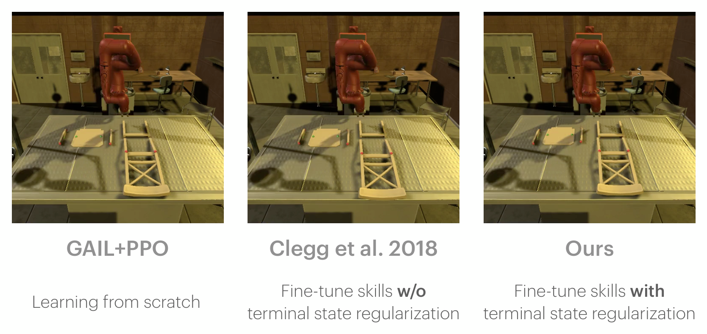
14. 요약 — T-STAR (Summary — T-STAR)
- 스킬을 미세 조정해 복잡하고 긴 지평의 과제를 조합하자고 제안합니다 (We propose to fine-tune skills to compose complex, long-horizon tasks).
- 스킬을 그냥 미세 조정하면 실패합니다. 스킬의 종료 상태 분포가 매우 커지기 때문입니다 (Naive fine-tuning of skills fails since the skills end up with very large terminal state distributions).
- 종료 상태 정규화가 종료 상태를 효과적으로 묶어 둡니다 (Terminal state regularization effectively encourage bounded terminal states).
- 이 방법이 가구 조립 과제를 풉니다 (Our approach solves the furniture assembly tasks).
38쪽의 요약과 나란히 읽으면 두 연구의 관계가 보입니다. 첫 연구는 “스킬을 재사용(reuse)하되 그냥 실행하면 실패한다”에서 출발해 스킬 사이를 배웠고, 두 번째 연구는 “스킬을 미세 조정(fine-tune)하되 그냥 미세 조정하면 실패한다”에서 출발해 스킬의 끝을 묶었습니다. 둘 다 “스킬을 단순히 이으면 실패한다”는 같은 관찰에서 시작합니다.
15. 다시, 긴 지평의 과제를 위한 스킬 기반 강화학습 (Skill-Based RL for Long-Horizon Tasks)
56쪽은 3쪽과 같은 슬라이드(2절의 그림)를 다시 띄웁니다. 지금까지(3–55쪽)는 왼쪽 상자 — 스킬 — 를 어떻게 잇는가를 다루었고, 여기서부터는 오른쪽 상자 — 사전 경험 — 으로 넘어갑니다. 부제의 두 예가 그대로 다음 두 연구가 됩니다.
- 스킬 사전 분포(skill prior): 그 상태에서 어떤 스킬이 그럴듯한가를 데이터에서 배웁니다 → SPiRL (16–18절)
- 세계 모형(world model): 스킬을 실행하면 어떻게 될지를 스킬 단위로 내다봅니다 → SkiMo (19–21절)
두 연구 모두 59–60쪽의 그림처럼 대규모 오프라인 데이터셋에서 스킬과 사전 경험을 함께 뽑아낸다는 공통점이 있습니다.
16. 스킬로 과제 배우기 (Learning a Task with Skills)
세 번째 연구의 출처는 Pertsch et al., Accelerating Reinforcement Learning with Learned Skill Priors, CoRL 2020입니다. 57쪽은 과제 “Task: cook pasta”(파스타 요리)를 스킬로 배우는 구조를 그립니다.
- 과제 정책(task policy) \(\pi(\mathbf{z} \mid \mathbf{s}_t)\)가 상태 \(\mathbf{s}_t\)를 보고 스킬 임베딩(skill embedding) 공간 \(\mathcal{Z}\)의 한 점 \(\mathbf{z}\)를 고릅니다.
- 스킬 정책(skill policy) \(\pi(\mathbf{a}_i \mid \mathbf{s}, \mathbf{z})\)가 그 \(\mathbf{z}\)를 받아 \(H\)스텝 동안의 행동 \(\hat{\mathbf{a}}_1, \hat{\mathbf{a}}_2, \dots, \hat{\mathbf{a}}_H\)를 내고, 행동이 환경으로 들어가 다음 상태가 됩니다. 굵은 \(\mathbf{a}_i\)는 \(H\)스텝의 행동을 묶은 열, 곧 스킬 하나를 뜻합니다(원 논문의 표기).
- 스킬 정책 옆의 눈송이는 스킬 정책이 얼려져(frozen) 있다는 표시입니다. 과제를 배우는 동안에는 과제 정책만 학습합니다.
16회차 5.3절의 설계 선택으로 읽으면 스킬 \(\mathbf{z}\), 사전학습, 고정 지평(\(H\)스텝마다 다시 고름)의 조합이고, 15회차 10절에서 본 스킬 정책이 하위 정책 자리에 들어가는 셈입니다.
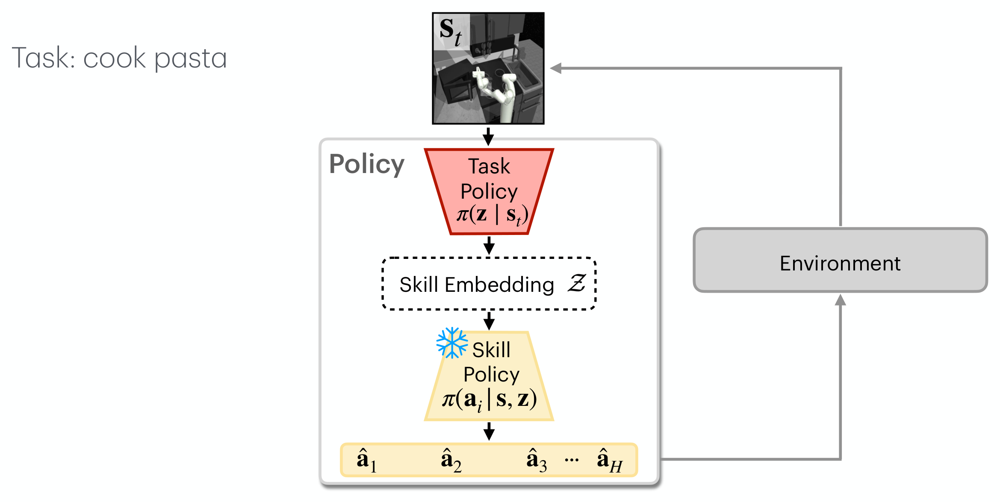
이 구조에서 과제 정책은 행동 공간 대신 스킬 공간을 탐색합니다. 그런데 스킬 공간 \(\mathcal{Z}\)에는 지금 상태에서 쓸모 있는 스킬도, 전혀 엉뚱한 스킬도 함께 들어 있습니다. 탐색이 아무 스킬이나 고른다면 스킬 공간에서도 시행착오는 여전히 길 것입니다. 58쪽의 질문이 여기서 나옵니다.
17. 스킬 사전 분포: 어떤 스킬이 그럴듯한가? (Skill Prior — Which Skill Is Plausible?)
58쪽은 운전에 빗대어 답합니다. T자 교차로에 들어선 차가 할 수 있는 운전 스킬은 많지만, 이 상태에서 그럴듯한 것은 일부뿐입니다.
- 그럴듯한 스킬(파란 화살표): 좌회전, 우회전, 유턴
- 그럴듯하지 않은 스킬(빨간 화살표): 맞은편 연석으로 직진, 모퉁이로 급하게 우회전, 뒤 차로 후진 — 모두 충돌(폭발 그림)로 끝납니다.
오른쪽 원이 이를 스킬 공간으로 옮깁니다. 원 전체가 모든 운전 스킬(“All Driving Skills”)이고, 그 안의 초록 영역이 스킬 사전 분포(“Skill Prior”) — 지금 상태에서 쓸 법한 교차로 스킬 전체(“All Intersection Skills”) — 이며, 초록 영역 안의 파란 타원 하나가 좌회전(“Left Turn”)입니다. 초록 영역 밖의 빨간 타원들은 이 상태에서 그럴듯하지 않은 스킬입니다.
스킬 사전 분포 \(p_{\mathbf{a}}(\mathbf{z} \mid \mathbf{s})\)는 상태 \(\mathbf{s}\)에서 각 스킬 \(\mathbf{z}\)가 얼마나 그럴듯한지를 주는 분포입니다. 원 논문은 상태에 따라 달라지는 사전 분포에 초점을 맞춥니다. 사전 분포는 과제와 무관하게 모은 데이터에서 배우므로 “이 상태에서 사람(또는 로봇)들이 대개 무엇을 했는가”를 담을 뿐, 지금 과제에서 무엇을 해야 하는지는 알려 주지 않습니다.
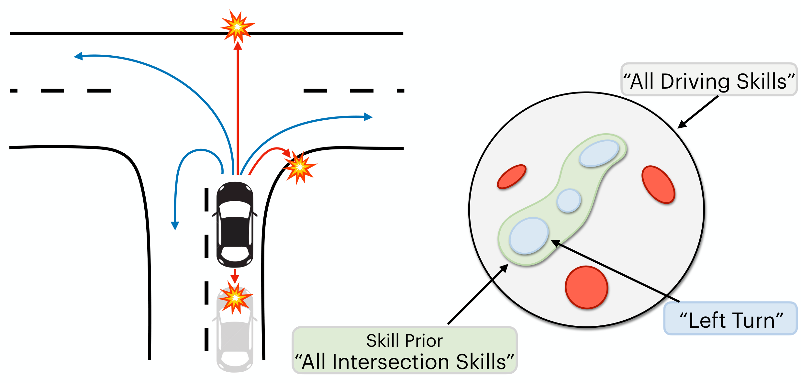
18. 스킬 사전 분포 강화학습 (Skill-Prior RL, SPiRL)
59쪽이 방법 전체를 세 단계로 그립니다.
- 재사용 가능한 스킬 추출 (Extract Reusable Skills): 대규모 오프라인 데이터셋에서 수납장 밀기(Slide Cabinet), 주전자 옮기기(Move Kettle), 전자레인지 열기(Open Microwave) 같은 스킬을 뽑아 스킬 임베딩 공간을 만듭니다.
- 스킬 사전 분포 학습 (Learn Skill Prior): 같은 데이터에서 상태마다 그럴듯한 스킬의 분포를 배웁니다. 그림의 상태에서는 slide와 move가 그럴듯하고 open은 X로 지워져 있습니다.
- 새 과제에서의 효율적인 강화학습 (Efficient RL on new tasks): 1의 스킬과 2의 사전 분포로 새 과제를 빠르게 배웁니다.
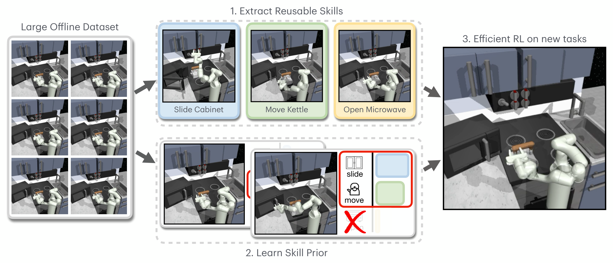
슬라이드는 각 단계의 식을 적지 않습니다. 원 논문에 따라 정리하면 다음과 같습니다.
- 스킬 임베딩: 고정 길이 \(H\)의 행동 열 \(\mathbf{a}_i\)를 변분 오토인코더(VAE)로 압축해, 인코더 \(q(\mathbf{z} \mid \mathbf{a}_i)\)와 디코더로 이루어진 저차원 스킬 공간 \(\mathcal{Z}\)를 배웁니다. 원 논문의 기본형은 디코더가 상태를 보지 않는 \(p(\mathbf{a}_i \mid \mathbf{z})\)이고, 57쪽 그림은 상태도 함께 받는 스킬 정책 \(\pi(\mathbf{a}_i \mid \mathbf{s}, \mathbf{z})\)로 그립니다.
- 스킬 사전 분포: 데이터의 각 (상태, 행동 열) 쌍에 대해, 행동 열에서 추론한 스킬의 분포 \(q(\mathbf{z} \mid \mathbf{a}_i)\)와 그 상태에서 예측한 사전 분포 \(p_{\mathbf{a}}(\mathbf{z} \mid \mathbf{s})\)의 KL 발산을 줄입니다. 사전 분포의 학습이 인코더를 바꾸지 않도록 인코더 쪽으로는 경사를 흘리지 않습니다.
\[ \min_{p_{\mathbf{a}}} \; \mathbb{E}_{(\mathbf{s}, \mathbf{a}_i) \sim \mathcal{D}} \Big[ D_{\mathrm{KL}}\big( q(\mathbf{z} \mid \mathbf{a}_i) \,\big\|\, p_{\mathbf{a}}(\mathbf{z} \mid \mathbf{s}) \big) \Big] \]
- 새 과제에서의 강화학습: 과제 정책 \(\pi_\theta(\mathbf{z} \mid \mathbf{s})\)의 목적함수에서 SAC(7회차 21–27절)의 엔트로피 보너스를 사전 분포와의 KL 발산으로 바꿉니다. 여기서 \(\tilde{r}(\mathbf{s}_t, \mathbf{z}_t)\)는 스킬 하나를 실행하는 동안 받은 보상입니다.
\[ J(\theta) = \mathbb{E}_{\pi_\theta} \Big[ \sum_{t} \tilde{r}(\mathbf{s}_t, \mathbf{z}_t) - \alpha\, D_{\mathrm{KL}}\big( \pi_\theta(\mathbf{z}_t \mid \mathbf{s}_t) \,\big\|\, p_{\mathbf{a}}(\mathbf{z}_t \mid \mathbf{s}_t) \big) \Big] \]
KL 항을 풀어 보면 이 바꿈의 뜻이 보입니다. KL 발산의 정의 \(D_{\mathrm{KL}}(\pi \,\|\, p) = \mathbb{E}_{\mathbf{z} \sim \pi}[\log \pi(\mathbf{z} \mid \mathbf{s}) - \log p(\mathbf{z} \mid \mathbf{s})]\)에서 첫째 항의 기댓값이 엔트로피의 음수 \(-\mathcal{H}(\pi)\)이므로,
\[ -\alpha\, D_{\mathrm{KL}}\big( \pi \,\|\, p_{\mathbf{a}} \big) = \alpha\, \mathcal{H}(\pi) + \alpha\, \mathbb{E}_{\mathbf{z} \sim \pi} \big[ \log p_{\mathbf{a}}(\mathbf{z} \mid \mathbf{s}) \big] \]
입니다.
- 첫째 항은 SAC의 엔트로피 보너스 그대로입니다. 정책이 한 스킬에 쏠리지 않고 넓게 탐색하게 합니다.
- 둘째 항이 새로 생긴 몫입니다. 사전 분포가 높은 확률을 주는 스킬, 곧 58쪽의 초록 영역 안의 스킬을 고를수록 보너스를 받습니다.
넓게 탐색하되 그럴듯한 곳 안에서만 넓게 탐색하라는 것이 SPiRL의 요지입니다. 사전 분포가 스킬 공간 전체에서 균등하다면 둘째 항이 상수가 되어 SAC로 돌아갑니다.
19. 스킬 기반 모형 기반 강화학습 (Skill-Based Model-Based RL, SkiMo)
네 번째 연구의 출처는 Shi et al., Skill-based Model-based Reinforcement Learning, CoRL 2022입니다. 56쪽 부제의 남은 예, 세계 모형을 스킬에 결합합니다.
19.1 스킬 동역학 모형을 배운다
60쪽은 59쪽의 세 단계 그림 위에 단계 하나를 덮어씁니다. 주황 글씨의 “Learn Skill Dynamics Model”(스킬 동역학 모형 학습)입니다. 전자레인지 열기(open)를 실행하면 닫혀 있던 전자레인지가 열린 장면이, 이어서 주전자 옮기기(move)를 실행하면 주전자가 옮겨진 장면이 된다는 것을 스킬 단위로 예측하는 모형입니다. 스킬과 스킬 사전 분포는 SPiRL과 같이 오프라인 데이터에서 배우고, 여기에 스킬의 결과를 예측하는 모형을 더합니다. 원 논문은 이 셋 — 스킬, 스킬 사전 분포, 스킬 동역학 모형 — 을 오프라인 데이터에서 함께 학습합니다.
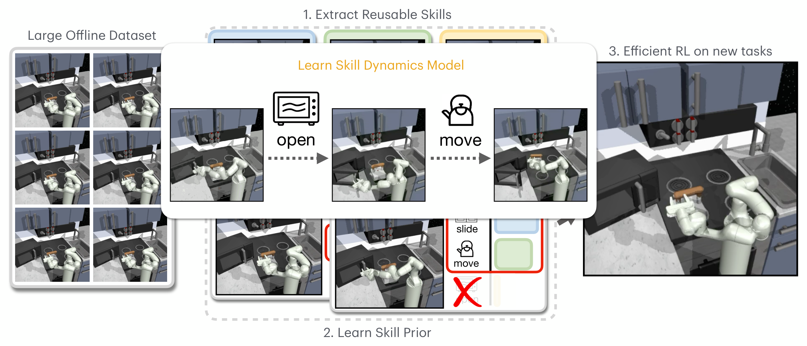
19.2 한 스텝 모형 대 스킬 동역학 모형
61쪽이 두 모형을 대비합니다.
- 한 스텝 모형(single-step model): 닫힌 전자레인지(Microwave closed)에서 행동 \(a_t\) 하나 — “손잡이를 잡고 10Nm의 토크를 가한다(grasp the handle, apply torque 10Nm)” — 를 하면 전자레인지가 5° 열린다(Microwave opened 5°)고 예측합니다. 10–11회차에서 다룬 모형 \(p(\mathbf{s}_{t+1} \mid \mathbf{s}_t, \mathbf{a}_t)\)가 이것입니다.
- 스킬 동역학 모형(skill dynamics model): 같은 상태에서 스킬 open 하나를 실행하면 전자레인지가 열린다(Microwave opened)고 한 번에 예측합니다.
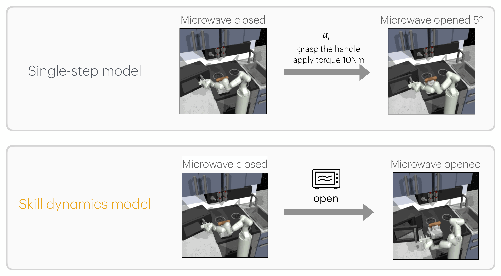
원 논문의 스킬 동역학 모형은 11회차의 Dreamer·TD-MPC처럼 잠재 공간에서 예측합니다. 상태를 잠재 상태 \(\mathbf{h}_t\)로 바꾼 뒤, 스킬 \(\mathbf{z}_t\)를 실행한 \(H\)스텝 뒤의 잠재 상태를 한 번에 냅니다.
\[ \hat{\mathbf{h}}_{t+H} = D_\psi(\mathbf{h}_t, \mathbf{z}_t), \qquad H = 10 \]
여기서 \(D_\psi\)는 원 논문의 표기로, 13절의 판별기 \(D^{i+1}\)과는 다른 것입니다.
- 예측의 횟수: 한 스텝 모형으로 \(H\)스텝 앞을 보려면 예측을 \(H\)번 이어야 하지만, 스킬 동역학 모형은 1번이면 됩니다. 원 논문은 이를 “평평한 방법의 \(1/H\)번의 동역학 예측과 행동 선택만 필요하다”고 적습니다.
- 오차 누적: 10회차 17.1절에서 보았듯 한 스텝 모형은 예측을 이을 때마다 앞 예측의 오차를 다음 예측의 입력으로 넘기므로 오차가 쌓입니다. 예측의 횟수가 \(1/H\)로 줄면 오차가 쌓일 기회도 그만큼 줄어듭니다. 20절의 실험이 이것을 확인합니다.
19.3 상상 속 스킬 계획
62–64쪽은 이 모형으로 계획하는 방법을 보여 줍니다.
- 상상 속 스킬 계획 1(Imaginary Skill Plan 1): 지금 장면에서 open → (예측된 장면) → move → (예측된 장면) → … 을 모형 안에서 굴려 보고, 그 결과 받을 보상을 +10으로 예측합니다. 아래의 주황 글씨 “Predicts skill outcome”(스킬의 결과를 예측한다)이 모형의 역할입니다(62쪽).
- 상상 속 스킬 계획 2(Imaginary Skill Plan 2): move → … → slide → … 의 계획은 +1로 예측됩니다. 그 아래의 세로 말줄임표는 다른 계획들도 더 시험해 본다는 뜻입니다(63쪽).
- 64쪽에서 보상이 큰 계획 1이 초록으로 강조되어 선택됩니다.
원 논문은 이 계획을 10회차 10.3절의 교차 엔트로피 방법(CEM)으로 스킬 열 위에서 풀고, 계획한 스킬 열의 첫 스킬만 실행한 뒤 다시 계획합니다. 10회차 16절의 “계획하고 다시 계획하기(모델 예측 제어)”를 행동 열이 아니라 스킬 열에서 하는 셈입니다. 원 논문은 과제 정책과 가치 함수 \(Q(\mathbf{h}_t, \mathbf{z}_t)\)도 함께 학습해 계획에 씁니다.
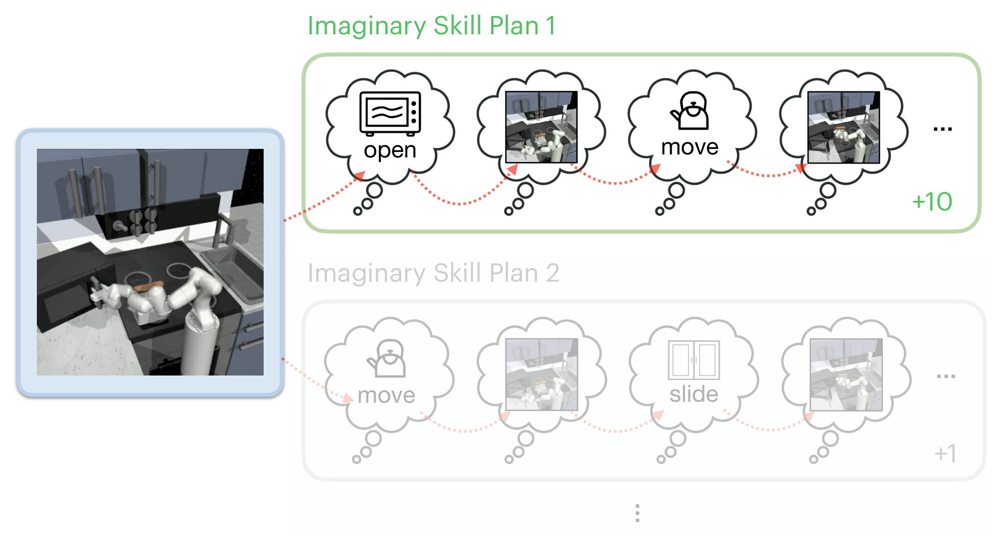
20. 500스텝 미래 예측 (500-Step Future Prediction)
65쪽의 질문이 첫 실험을 엽니다.
Can skill dynamics model make long-term prediction more accurate? (스킬 동역학 모형은 먼 미래의 예측을 더 정확하게 할 수 있을까?)
66쪽은 미로(Maze) 환경에서 500스텝 앞까지의 예측을 비교합니다. 원 논문에 따르면 실제 시작 상태와 500개의 행동(SkiMo는 스킬 50개)을 주고, 모형이 500스텝 뒤까지 예측한 잠재 상태를 다시 상태로 풀어 실제 궤적과 비교한 것입니다.
- Dreamer (한 스텝 모형): 예측한 궤적이 실제 궤적에서 금세 벗어납니다(The prediction deviates from the ground truth quickly).
- SkiMo (스킬 동역학 모형): 예측한 궤적이 실제 궤적과 거의 겹칩니다(The prediction has little error).
SkiMo의 예측 패널만 색 막대의 눈금이 0–50인 것은, 예측을 스킬 단위로 하기 때문입니다. 스킬 하나가 10스텝이므로 500스텝은 스킬 50개입니다.
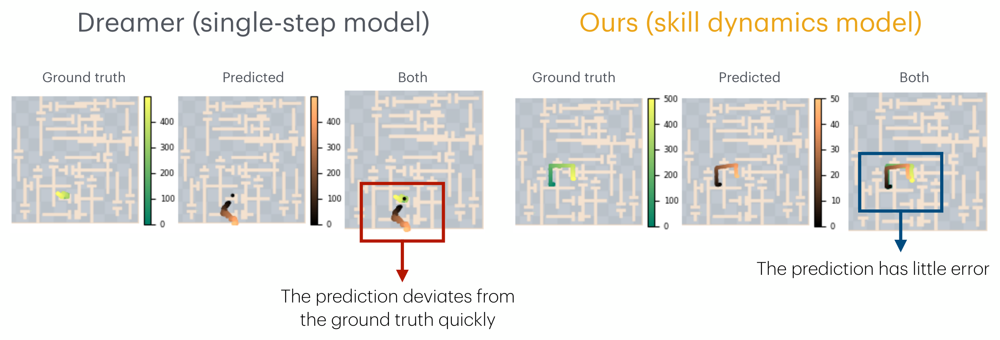
21. SPiRL과 SkiMo의 결과 (Results of SPiRL and SkiMo)
67쪽의 질문이 두 번째 실험을 엽니다.
Can skill dynamics model improve sample efficiency for long-horizon tasks? (스킬 동역학 모형은 긴 지평의 과제에서 표본 효율을 높일 수 있을까?)
68쪽은 네 환경의 학습 곡선입니다. 가로축은 환경 스텝(단위 1M), 세로축은 미로에서 평균 성공률(Average Success), 나머지에서 완료한 하위 과제의 평균 개수(Average Subtasks, 최대 4)입니다. 원 논문에 따르면 하위 과제의 순서는 다음과 같습니다.
| 환경 | 과제 (원 논문) | 가로축 범위 |
|---|---|---|
| Maze | 출발점(초록)에서 목표(빨강)까지 가면 성공 | 0–2M |
| Kitchen (MKBL) | 전자레인지(Microwave) → 주전자(Kettle) → 아래 버너(Bottom burner) → 조명(Light) | 0–1M |
| Kitchen (MLSH) | 전자레인지(Microwave) → 조명(Light) → 미닫이 수납장(Slide cabinet) → 여닫이 수납장(Hinge cabinet). 원 논문의 이름은 “Mis-aligned Kitchen” | 0–1M |
| CALVIN | 서랍 열기 → 전구 켜기 → 슬라이더 왼쪽으로 밀기 → LED 켜기 | 0–2M |
곡선의 값을 대략 읽으면 다음과 같습니다(그래프의 눈금에서 읽은 근삿값입니다).
- Maze: SkiMo는 0.5M 스텝까지 거의 0이다가 가파르게 올라 약 1.3M 스텝에서 성공률 0.9를 넘고, 약 1.8M 스텝에서 끝나는 곡선이 1에 가깝습니다. SPiRL은 오르내리며 2M 스텝 무렵 0.5 안팎이고, Dreamer와 SPiRL+Dreamer는 끝까지 0에 머뭅니다.
- Kitchen (MKBL): SkiMo는 약 0.25M 스텝에 하위 과제 3개를 넘겨 약 3.1개로 끝납니다. SPiRL도 빠르게 올라 약 2.9개로 끝나지만 줄곧 SkiMo보다 아래입니다. SPiRL+Dreamer는 최고 약 1.7개에서 약 1.2개로 내려오고, Dreamer는 0.2개를 넘지 못합니다.
- Kitchen (MLSH): SkiMo는 약 0.5M 스텝에 3개에 닿아 약 3.2개로 끝납니다. SPiRL은 더 느리게 올라 약 0.7M 스텝에 2.5개를 넘기고 약 3.0개로 끝납니다. SPiRL+Dreamer는 1개 안팎, Dreamer는 0.2개 안팎입니다.
- CALVIN: SkiMo는 약 0.7M 스텝에 3.5개를 넘겨 약 3.7개로 끝납니다. SPiRL은 2M 스텝에 약 2.9개, Dreamer는 최고 약 2.2개에서 약 1.8개로 내려오고, SPiRL+Dreamer는 0에 머뭅니다.
네 환경 모두에서 SkiMo의 곡선이 가장 빠르게 올라 가장 높은 곳에서 끝납니다(미로에서는 처음 0.5M 스텝 동안 SPiRL이 조금 위에 있습니다). 스킬 없이 한 스텝 모형만 쓰는 Dreamer는 미로와 두 부엌에서 거의 진전이 없고 CALVIN에서도 2개 안팎에 그치며, 스킬만 쓰는 SPiRL은 진전하지만 더 느립니다. 원 논문에 따르면 SPiRL+Dreamer는 스킬 공간에서 모형과 정책을 배우되 모형과 스킬을 함께 학습하지는 않는 비교 방법이며, 네 환경 모두에서 SkiMo보다 크게 낮습니다.
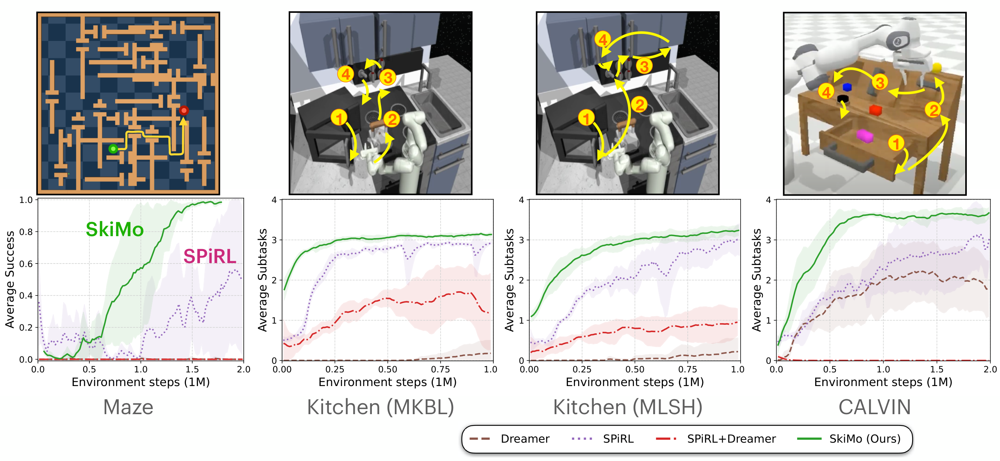
22. 정리 (Takeaways)
69쪽이 이번 강의를 다섯 줄로 맺습니다.
- 계층적 강화학습은 시간적으로 확장된 탐색과 단순해진 신용 할당으로 긴 지평의 복잡한 과제를 푸는 데 도움이 됩니다 (HRL helps solving long-horizon complex tasks with temporally extended exploration and simplified credit assignment).
- 하지만 계층적 강화학습에서는 스킬을 단순히 조합하는 일조차 쉽지 않습니다 (Simple skill composition is also not trivial in HRL though).
- 다양한 사전 지식을 활용하는 것이 계층적 강화학습에 중요할 수 있습니다 (Leveraging diverse prior knowledge can be important for HRL).
- 여러 계층적 강화학습 방법이 제안되었지만, 아직 정해진 방법은 없습니다 (Many different HRL approaches suggested, yet there is no go-to method).
- 그래도 현실 세계의 문제를 다루는 그럴듯한 방향입니다! (Still, this is a plausible direction to tackle real-world problems!)
다섯 줄은 이번 데크와 16회차의 내용에 다음과 같이 대응합니다.
- 첫째 줄은 16회차 2절의 셈과 9절의 평가를 다시 적은 것입니다. 스킬 단위로 결정하면 탐색이 여러 스텝에 걸친 일관된 행동이 되고, 보상을 나누어 줄 결정의 수가 줄어듭니다.
- 둘째 줄은 이번 데크 앞부분(3–14절)의 요약입니다. 잘 배운 스킬도 그냥 이으면 실패했고(3.3절), 전환 정책도 되돌릴 수 없는 상태 앞에서는 쓸 수 없었으며(11절), 스킬을 미세 조정하면 종료 상태가 퍼졌습니다(12절).
- 셋째 줄은 뒷부분(15–21절)의 요약입니다. 오프라인 데이터에서 배운 스킬 사전 분포는 탐색을 그럴듯한 스킬 안으로 좁혔고, 스킬 동역학 모형은 먼 앞을 적은 오차로 내다보는 계획을 가능하게 했습니다.
- 넷째·다섯째 줄은 16회차 9절의 결론 “Largely unsolved / But, seems like a natural way to tackle real-world problems”를 이어받습니다.
네 연구를 2절의 두 재료로 다시 나누면 다음과 같습니다.
| 연구 | 재료 | 새로 배우는 것 | 핵심 장치 | 절 |
|---|---|---|---|---|
| 전환 정책 (ICLR 2019) | 스킬 | 스킬 사이의 전환 정책 | 근접도 예측기의 촘촘한 보상 | 3–10절 |
| T-STAR (CoRL 2021) | 스킬 | 스킬 자체 (미세 조정) | 개시 집합 판별기로 종료 상태를 묶는 보상 | 11–14절 |
| SPiRL (CoRL 2020) | 사전 경험 | 스킬 공간의 과제 정책 | 오프라인 데이터로 배운 스킬 사전 분포 | 16–18절 |
| SkiMo (CoRL 2022) | 사전 경험 | 스킬 동역학 모형과 과제 정책 | 스킬 단위로 내다보는 상상 속 계획 | 19–21절 |
정리하며 (Closing Remarks)
이번 강의의 논리 사슬을 한 장으로 요약하면 다음과 같습니다.
| 단계 | 내용 | 근거 |
|---|---|---|
| ① 출발점 | 긴 과제는 스킬과 사전 경험으로 풉니다. 이번 데크는 강의자의 네 연구로 두 재료를 차례로 다룹니다 | 1–2절 |
| ② 문제 | 따로 배운 스킬은 서로 이어지는 법을 배운 적이 없어, 앞 스킬이 끝난 상태가 다음 스킬의 개시 집합 밖이면 실패합니다 | 3.1–3.4절 |
| ③ 전환 정책 | 스킬마다 붙은 전환 정책이 좋은 초기 상태로 데려간 뒤 스스로 종료하고 스킬에 넘깁니다. 원 논문의 메타 정책은 규칙 기반입니다 | 3.5–4절 |
| ④ 근접도 보상 | 다음 스킬의 성공은 이진·희소한 보상이므로, 근접도 \(P(\mathbf{s}) = \delta^{\,\text{step}}\)의 증가분 \(P(\mathbf{s}_{t+1}) - P(\mathbf{s}_t)\)를 매 스텝 줍니다. 원 논문은 끝에서 \(P(\mathbf{s}_T)\)를 더 줍니다 | 5–6절 |
| ⑤ 근접도 예측기 | 다음 스킬의 성공·실패로 나눈 두 버퍼에서 회귀로 배우고, 전환 정책과 함께 좋아집니다 | 7절 |
| ⑥ 결과 | 장애물 코스, 순찰, 서브에서 스킬을 매끄럽게 잇습니다 | 3.5, 8–10절 |
| ⑦ 한계 | 가구 조립처럼 되돌릴 수 없거나 제어할 수 없는 상태가 있으면 좋은 초기 상태로 옮길 수 없어 전환 정책이 작동하지 않습니다 | 11절 |
| ⑧ 개시 집합 넓히기 | 스킬을 미세 조정해 \(I_i\)가 \(\beta_{i-1}\)을 덮게 하면(Clegg et al.) \(\beta_i\)도 커지고, 스킬을 이을수록 집합이 점점 커집니다 | 12절 |
| ⑨ T-STAR | 개시 집합은 넓히되 종료 상태는 다음 스킬의 개시 집합 안으로 묶도록, 판별기가 주는 보상 \(\mathbf{1}_{\mathbf{s} \in \beta_i} D^{i+1}(\mathbf{s})\)를 더해 미세 조정합니다 | 13–14절 |
| ⑩ 스킬 사전 분포 | 오프라인 데이터로 배운 \(p_{\mathbf{a}}(\mathbf{z} \mid \mathbf{s})\)와의 KL 정규화가 그 상태에서 그럴듯한 스킬 안에서만 넓게 탐색하게 합니다(SPiRL) | 15–18절 |
| ⑪ 스킬 동역학 모형 | 스킬 하나의 결과를 한 번에 예측해 500스텝 앞까지 오차가 적고, 상상 속 스킬 계획으로 네 환경에서 가장 빠르게 배웁니다(SkiMo) | 19–21절 |
| ⑫ 결론 | 계층적 강화학습은 시간적으로 확장된 탐색과 단순해진 신용 할당으로 긴 과제를 돕지만, 스킬을 단순히 잇는 일조차 쉽지 않고, 다양한 사전 지식의 활용이 중요할 수 있으며, 아직 정해진 방법이 없습니다. 그래도 현실 문제를 다루는 그럴듯한 방향입니다 | 22절 |